InvestigaciónCaso Encuentro · 2023Premio Rey de España de Periodismo Narrativo 2024Finalista Premio Gabo 2023Finalista Fetisov Journalism AwardsMención honorífica Premio Javier Valdez (IPYS)
ElGranPadrino
La investigación periodística sobre corrupción y narcotráfico que llevó a una acusación de juicio político contra el presidente de la República del Ecuador. Diez periodistas, 630 horas de trabajo, 1.500 contratos públicos y un informe policial que el poder creía enterrado.
Danilo CarreraEl Gran Padrino · cuñado del presidente
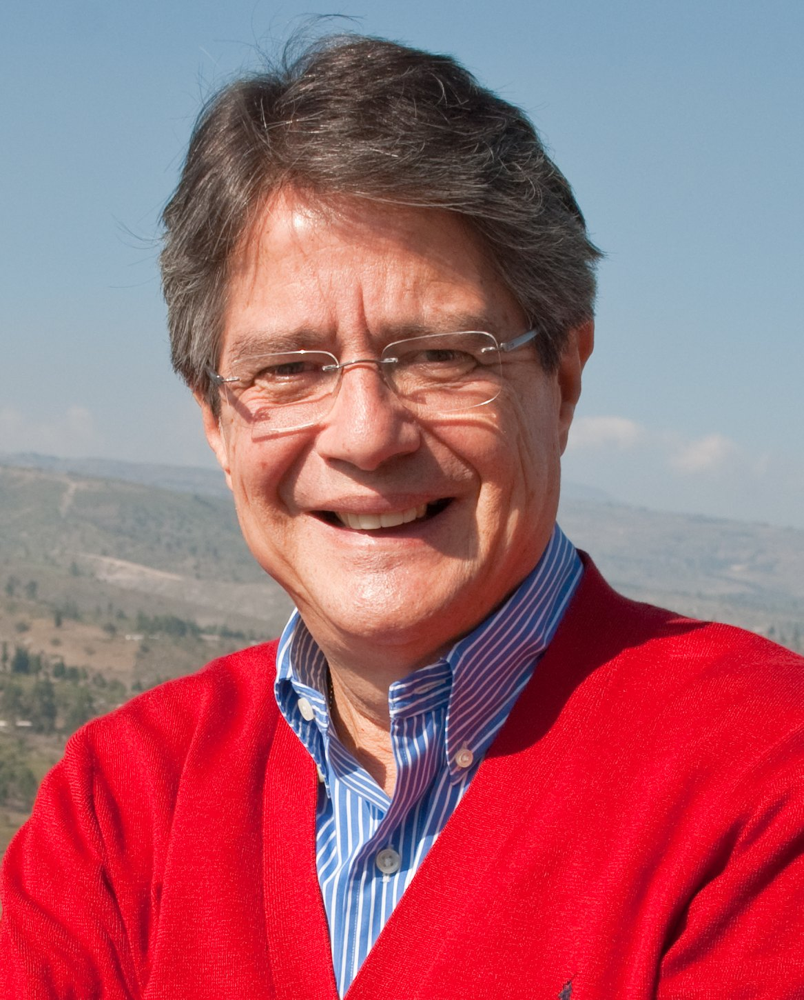
Guillermo LassoPresidente de la República · 2021-2023
Retratos de Danilo Carrera y Guillermo Lasso · Asamblea Nacional del Ecuador (CC BY-SA 2.0) · Fundación del Barrio (CC BY-SA 3.0) · Wikimedia Commons
34Entregas diarias
1.500Contratos revisados
8Investigaciones fiscales
104Votos por el juicio político
Desplázate
El 13 de mayo de 2021, once días antes de que Guillermo Lasso asumen la Presidencia de Ecuador, la inteligencia antinarcóticos de la Policía Nacional ponía en marcha una operación secreta para identificar la estructura de narcotráfico de la mafia albanesa, en Ecuador. Lasso lo desconocía y peor aún, su influyente cuñado Danilo Carrera Druet.
El informe policíaco se cerraría casi un año después, de forma irregular e ilegal, con la complicidad de la más alta cúpula de la Policía. Ese informe que creían extinto, no lo estuvo, para la desgracia del Gobierno, del Presidente y su cuñado.
Tendría que pasar otro año más para que los 10 periodistas del equipo de investigación, tras 630 horas de trabajo, 1.500 contratos públicos revisados y cientos de entrevistas off the record, sacaran a la luz el documento y provocaran el escándalo de corrupción que llevó, por primera vez en casi un siglo, a un presidente a un juicio político.
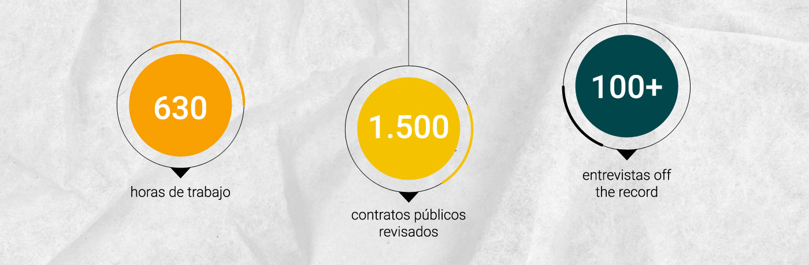
Infografía original de la investigación (2023).
Lasso, un conservador de derecha que llegó al poder tras una década de intentos y promesas anticorrupción, se vería envuelto en las telarañas de esta trama que incluso llegó a introducir sus millonarios tentáculos en la campaña presidencial, aunque Lasso asegura haberlo desconocido.
Esta red, que tenía como centro las operaciones del narcotráfico internacional, permeaba hasta las profundidades del Estado y se enriquecía de él. Pedidos de sobornos, falsificación de documentos y contratos amañados en, al menos, cuatro de las principales empresas estatales. Este emporio estatal incluye empresas petroleras y eléctricas (que sumadas tienen presupuestos superiores a los $14.000 millones, es decir, cerca del 50% de todo el Presupuesto General del Ecuador para el 2023).
Todo esto develado por una investigación de un joven equipo de reporteros que provocó la reacción judicial. La Fiscalía General del Estado reaccionó abriendo una indagación por presunta delincuencia organizada, cohecho y concusión.
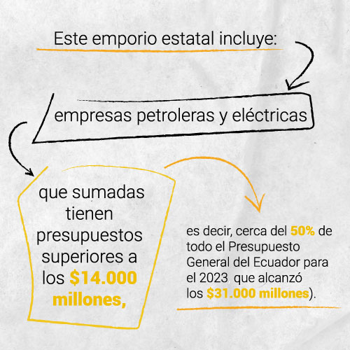
El emporio estatal: petroleras y eléctricas suman presupuestos superiores a $14.000 millones.
Las publicaciones generaron también la reacción de Contraloría, la preocupación de embajadas y tras siete semanas de reportes diarios, la vorágine política terminó en un informe parlamentario que recomendó el enjuiciamiento político del Presidente de la República.
01Lo más importante es la familia
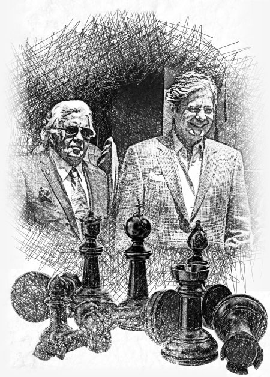
Guillermo Lasso y Danilo Carrera: cuñado, mentor y socio durante décadas.
Danilo Carrera, economista de 84 años, no es solo el cuñado de Guillermo Lasso, casado con su hermana María Eugenia. También es su mentor, su modelo a seguir, su socio durante décadas y a decir de muchos de sus colaboradores cercanos: “casi su padre”. Carrera fue el primero en darle un empleo en la Bolsa de Valores de Guayaquil, cuando tenía 15 años, en 1970. Desde entonces se volvieron inseparables.
A los 26 años, Lasso fue por primera vez llamado presidente. Carrera le consiguió un cargo para sucederlo como presidente del directorio de Finansur, una institución crediticia que luego compraría todas las acciones del Banco Guayaquil, donde el actual mandatario de los ecuatorianos forjó su fortuna. Hoy es el tercer banco más grande del país, con utilidades superiores a los $95 millones, en 2022, según los registros de la Superintendencia de Bancos.
Carrera, quien se ha negado antes, durante y después de la publicación a comentar para esta investigación, fue de los primeros que confiaron en el perfil político de Guillermo Lasso. Él fue quien organizó la reunión con el líder del Partido Social Cristiano, Jaime Nebot, entonces alcalde de Guayaquil, en el 2011, para que inicie su camino a la Presidencia de la República. Siempre estuvo a su lado, no solo moralmente, sino con su chequera presente. Tan solo en la última carrera electoral, que lo llevaría al poder en el 2021, le entregó 250.000 dólares para su campaña, de acuerdo con los archivos del Consejo Nacional Electoral.
Fue precisamente allí donde surgió el lazo inquebrantable con su mejor amigo, Rubén David Cherres Faggioni, un nombre vinculado, por sentencias y decisiones judiciales, con el narcotráfico. O, mejor dicho, dos nombres: los registros policiales muestran que esta es su nueva identidad. Antes, su segundo nombre era Antonio y la ‘z’ de su apellido ahora es una ‘s’.
A Carrera y Cherres los unen los gustos terrenales. El mismo estilo para vestir: chaqueta, camisa y pantalón de gabardina; un corte de cabello muy parecido, la sonrisa fácil, un bronceado permanente, los mismos lugares de fiesta y el tenis, el deporte preferido del cuñado del Presidente.
La primera vez que Rubén Cherres se vio delante de la Justicia, en un caso por estupefacientes, fue en 1999. Un caso menor, del que no existen registros públicos. En 2014, volvió a los tribunales, pero por narcotráfico. Él y otras 13 personas fueron acusadas de tráfico ilícito de droga, según los registros del sistema de la Judicatura, en el marco de un caso denominado Río Grande, en el que antinarcóticos impidió el envío de más de 945 kilos de clorhidrato de cocaína a Europa. Estuvo detenido en prisión, donde la Policía presume que inició sus relaciones con miembros de la mafia albanesa, pero salió luego de un año, bajo beneficios penitenciarios. Nueve años más tarde se le concedió sobreseimiento provisional. El juicio se mantiene activo hasta este momento, sin condena definitiva.
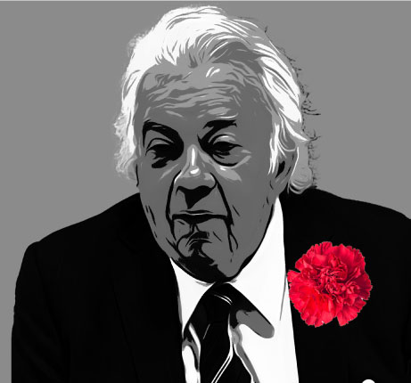
Danilo Carrera Drouet, “El Gran Padrino”.
Este antecedente judicial no impidió que la amistad con Carrera se fortaleciera y fuera pública. Cherres era un habitual visitante de la mansión de una cuadra que posee el cuñado del Presidente en el acomodado y tradicional barrio Los Ceibos de Guayaquil. Tampoco le resultaba incómoda su presencia a Guillermo Lasso, pues colaboró activamente en su campaña por invitación de Carrera.
02La primera confesión
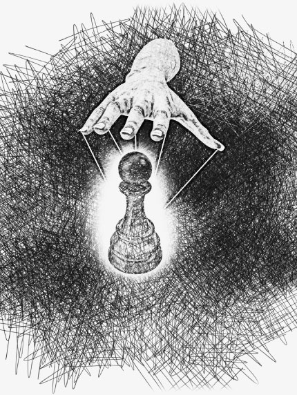
Leonardo Cortázar, alias “Messi”, confesó cómo operaba la estructura.
Esta investigación inició a mediados de 2022 con un seguimiento rutinario de contratos en el sector eléctrico. Había llegado a la redacción una denuncia de proveedores estatales que se quejaban de un “monopolio corrupto” para favorecer a un sombrío personaje fuera de la oficialidad de las empresas eléctricas.
El personaje principal de la denuncia era Leonardo Héctor Cortázar Arcos, quien se hacía llamar ‘Messi’. Como el astro del fútbol mundial, hizo todas las fintas necesarias para evadir los controles del Servicio de Contratación de Obras Públicas del Ecuador y montar así una red de operadores en las empresas estratégicas del país. Lo consiguió durante tres gobiernos consecutivos: el de Rafael Correa (2006-2017), en el de Lenín Moreno (2017-2021) y en el primer año y medio de Guillermo Lasso.
Él es un ingeniero de 41 años, aunque nunca ejerció su profesión. Prefirió jugar a ser un empresario y político, que prosperó de la mano de las contrataciones públicas. De acuerdo con los registros de la Superintendencia de Compañías, hasta enero del 2023, era gerente de la empresa Anticre, de propiedad familiar y mantenía acciones en Plásticos Andinos, Reyavi y en Inlaks. Curiosamente, ninguna de ellas tuvo contratos directos con el Estado. ‘Messi’ era hábil para no avivar sospechas con sus finanzas personales. No pagó impuestos desde el 2002, de acuerdo al informe del Servicio de Rentas Internas.
Cortázar, de verbo estructurado y acento campesino, se sentía a gusto en las eléctricas. Y aunque prefería un bajo perfil, su fama empezó a escucharse en la boca de muchos proveedores. El equipo de investigación de este equipo lo buscó y consiguió su confesión, en una reunión de carácter casi clandestino, sin celulares, en un cuarto privado, con la voz hecha susurro. Aceptó hablar de sus negocios, ante la evidencia documental. Durante esa conversación, que sería la primera pieza de las publicaciones, admitió que operó en las eléctricas desde que Correa estuvo en el Palacio de Gobierno. Relató cómo con Moreno consolidó su red de funcionarios y cómo pudo seguir consiguiendo contratos durante el régimen de Lasso con la bendición de un padrino. Un gran padrino: Danilo Carrera, cuñado del Presidente. Así lo llamó en reiteradas ocasiones.
‘Messi’ era hábil para no avivar sospechas con sus finanzas personales. No pagó impuestos desde el 2002, de acuerdo al informe del Servicio de Rentas Internas. Tenía una fachada perfecta y su rastro se logró detectar revisando más de 35.000 documentos de las empresas estratégicas del Ecuador, que reflejaron una estructura criminal que opera dentro de las principales empresas públicas que maneja el Ejecutivo.
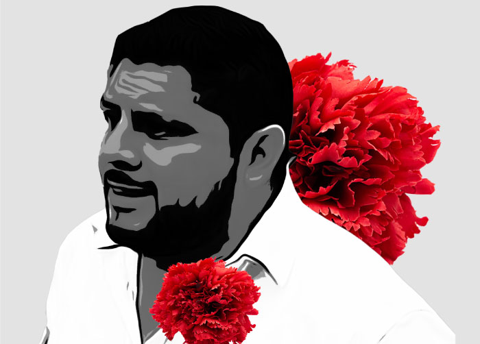
Cortázar no pagó impuestos desde 2002, según el SRI.
“Al viejo (Rubén) Cherres y a Danilo (Carrera), cuando los manes son los padrinos que nadie los puede hacer que aparezcan. Todavía no son nada visibles ni se les ha escuchado. Uno trata de cuidarse hermano y no exponer al padrino”, se mostró Cortázar indignado al inicio de la conversación. Se refería a las múltiples oportunidades en las que este medio de comunicación había hecho averiguaciones sobre ambos. “Yo no estoy aquí, o sea por Leonardo Cortázar. Tú sabes que me debo a otras personas”, completó la idea, sugiriendo que había asistido a la cita con autorización superior. En esta reunión, también contó cómo operaba desde la Dirección de las Empresas Estratégicas del Estado para hacerse de contratos con una fachada de aparente legalidad.
Dos años después participó en la campaña del correísmo, apoyando activamente a binomio presidencial de Andrés Arauz y Carlos Rabascall, y al actual asambleísta también del correísmo, Ronny Aleaga. A este último se refirió como “mi operador. No hubiese llegado donde ha llegado sino hubiera sido por nuestro financiamiento”, dijo entonces Cortázar. La acusación fue reiteradamente negada por el legislador, quien incluso llegó a afirmar que el único encuentro —casual, dijo— con Cortázar, fue en la piscina de un también investigado por corrupción, Xavier Jordán, en Miami.
El primer contacto de Cortázar con el gobierno de Guillermo Lasso, podría decirse, fue gracias al azar:
“Monge, hermano, entra a la Corporación Nacional de Electricidad (Cnel). Me ve ahí. Me dice: gordo, quédate. El man quería que me quedé sentado ahí como de encargo, como asesor, de gerente (…) Hermano cómo va ser hijueputa si a mí todo el mundo me vincula con el man, con el doble rueda (cómo se conocía al ex presidente Moreno, quien usa una silla de ruedas), yo me quedo afuera operando todo”. En jerga de contratistas, operar significa dirigir las transacciones ilícitas.
Este encuentro sirvió, según la declaración de Messi, para que su red de negocios sombríos en las eléctricas siguiera operando. De acuerdo a su testimonio, lo hizo con consentimiento de César Monge, uno de los personajes más cercanos al presidente Guillermo Lasso. Fue su brazo ejecutor en el área política, su consejero, presidente del partido oficialista y el primer ministro de Gobierno, pero falleció el 25 de julio del 2021, luego de un doloroso cáncer.
“Si mira, el man se muere y tiene un acuerdo con nosotros, que empezamos a operar la Corporación Nacional de Electricidad (Cnel), Roberto Bueno y yo. Y nos iban a tumbar pues, los manes que tenían que entrar. Nosotros fuimos donde la mujer de Monge y la man fue donde el Presidente y el Presidente le dijo: Hasta diciembre (2021) les respeto a la gente que llegaron a un acuerdo con él. Y nos respetaron hasta diciembre”.
Para descubrir la verdad de Cortazar había que bucear entre miles de hojas de contratos de las empresas eléctricas. La primera pista apareció en la provincia de El Oro, fronteriza con Perú. En esa jurisdicción operaba Karen Cornejo Ortega, una economista que decidió crear empresas de servicios integrales de generación eléctrica junto a su esposo Javier Ronquillo López.
Los dos crearon las compañías Laurety SAS, Contraselec, Servicios Integrales de Ingeniería Eléctrica Ronquillo & Cornejo. Lo hicieron entre 2019 y 2021. Ronquillo también abrió otra empresa con su madre, una ama de casa, Patricia López. A esa empresa la bautizaron Electricaodeth, en 2018.
Rodrigo Polo, representante legal del Colegio de Ingenieros Eléctricos de El Oro, presentó una demanda penal contra Cornejo y sus empresas porque aseguraba que, sospechosamente, ganaba contratos en la Corporación Nacional de Electricidad (Cnel), una empresa estatal que maneja un presupuesto anual de más de $300 millones.
Esos contratos se suscribieron en 2022 y sumaron 4´936.829 dólares, exactamente. El gremio de Ingenieros Eléctricos llevó su protesta formal a la cúspide del Gobierno. El 11 de mayo de 2022 enviaron una carta al gerente general de la Corporación Nacional Eléctrica, Antonio Icaza. En el documento relataban las irregularidades que hallaron. No tuvieron respuesta. Este equipo tampoco la tuvo, cuando incluyó estos hechos en sus publicaciones.
La red de empresas y consorcios que se turnaban los contratos de CNEL.
La investigación de este equipo documentó una compleja red en el sector eléctrico, cuya intención era evadir los deficientes controles de la contratación pública ecuatoriana. Para hacerlo, Karen Cornejo, quien operaba bajo órdenes de ‘Messi’, hizo uso de la compañía a nombre de su madre, Electricaodeth S.A., cuya gerenta era Éricka Farías.
Electricaodeth S.A. recibió de forma directa, al menos tres contratos de medio millón de dólares con CNEL. Para no evidenciar la buena fortuna de la empresa de Karen Cornejo, la compañía luego se alió con una empresa de su socia, Ericka Farías, y con la propia Farías como persona natural. De tal forma, un contrato de $2,5 millones, en 2022, recayó en una persona jurídica diferente: Consorcio Codelectric, que en realidad era la fachada de Cornejo y su socia Farías.
Esta modalidad, implementada en al menos una docena de proyectos, simuló concursos o licitaciones, donde la ley manda a que al menos tres oferentes disputen el contrato para beneficiar al Estado del mejor precio y oferta. En estos proyectos, según los documentos obtenidos por este medio, Cornejo dio luz verde a una maraña de actores relacionados, supuestamente en competencia.
Para ilustrar esta compleja trama, podemos referirnos —por ejemplo— a la instalación de medidores en las ciudades de Milagro, Durán, Machala o en la provincia de los Ríos. Luis Loayza pugnó por los medidores del norte de Los Ríos, pero también lo hizo por Machala y Durán, dos ciudades de la costa ecuatoriana.
Compitió en Los Ríos norte con David Duque Idrovo, con quien también pugnó en Durán, donde completaba el tercio Jilmer Ocielm Cia Ltda, quien antes ganó el concurso Los Ríos Sur.
Siempre los mismos actores, turnándose en los proyectos. Estas triangulaciones incluyen a al menos 12 proveedores identificados y debieron de haber despertado alertas en el control de las licitaciones, que prohíben expresamente las relaciones comerciales entre los participantes. Sin embargo, según los registros de la Seguridad Social, luego de que el Colegio de Ingenieros Eléctricos obligara judicialmente, el 17 de agosto de 2022, a que fueran expuestos, todos estos supuestos competidores asistían a las contrataciones con documentos que acreditaban su experiencia, firmados por las mismas personas: Karen Cornejo o algunas de sus compañías y consorcios.
Estos son los registros falsificados, hoy bajo investigación fiscal, una de las cuatro que la Fiscalía General abrió a partir de esta investigación.
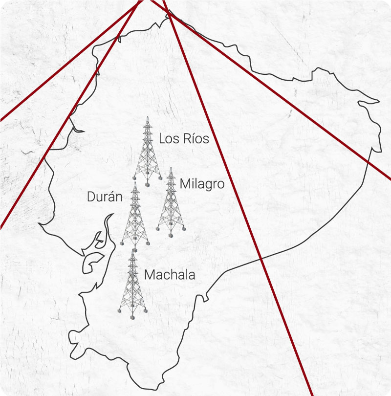
El sector eléctrico ecuatoriano: el botín.
El Gobierno también estuvo al tanto de estos registros. El 9 de noviembre de 2022, el Colegio de Ingenieros Eléctricos insistió en su denuncia y Linda Haz, directora de Atención Ciudadana del Gobierno, envió su reclamo al ministro de Energía, Fernando Santos. Nunca hubo respuesta para ellos. Ni siquiera por el también informado —y funcionario a cargo de los sectores estratégicos del Estado—, el gerente de la Empresa Coordinadora de Empresas Públicas, Hernán Luque Lecaro, a quien Cortázar identificaba como ‘H’. Lo que sigue a continuación es una reproducción exacta de uno de los fragmentos de la conversación de Cortázar con uno de los periodistas de este medio:
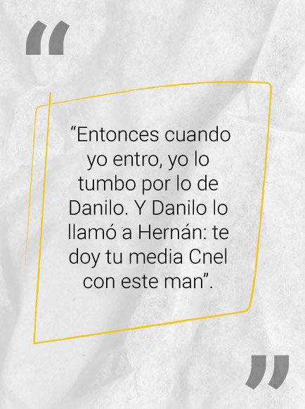
Los mismos actores, turnándose en los proyectos.
—Cuando salen llegan a un acuerdo con H —dice Messi.
—¿Con Luque?
—Claro. Y los manes me tumban a mí. Porque yo manejaba unidades y manejaba esa huevada con Roberto Bueno. Yo me empiezo a mover. Y el turco me lleva con Rubén (Cherres) donde Danilo (Carrera) y los tumbamos a esos hijueputas. Entonces cuando yo entro, yo lo tumbo por lo de Danilo. Y Danilo lo llamó a Hernán: te doy tu media Cnel con este man.
Este extracto de la conversación, publicada el 9 de enero de 2023, puso los ojos del país en un funcionario con rango de ministro, que hasta entonces, se había mantenido y retirado en sigilosa actitud, Hernán Luque Lecaro.
Según Cortázar, el todopoderoso funcionario de las empresas públicas, estaba al tanto del dinero que saqueaban de las arcas fiscales: “Ya pues hermano, era el que llevaba y el que entregaba el dinero. No yo. Después de dos meses, nos hacen un arqueo de caja y hubo un faltante como de 300 lucas ($300 mil)”.
Esa disputa de dinero le saldría cara a la red corrupta. El primero en pagar fue el gerente general de Cnel, Antonio Icaza, destituido de su cargo por decisión gubernamental.
04El exbanquero que ahorra en Andorra
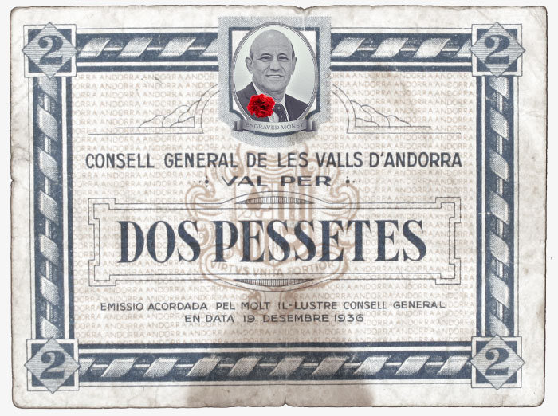
“Vamos a ir a abrir las cuentas en Andorra”: Hernán Luque.
El último paradero conocido del ex gerente de la Empresa Pública Coordinadora de Empresas Públicas (EMCO), Hernán Luque Lecaro, es Argentina. El Presidente de la República ha prometido, en cadena nacional, “traerlo del cogote”. Pero pocas horas después de que se emitieran las publicaciones de este equipo, luego de que se evidenciara su relación con Leonardo Cortázar y cómo se repartían los contratos en las compañías eléctricas y petroleras del país, tomó un vuelo de ida y sin retorno, según los registros migratorios obtenidos por este equipo. No hay quien responda por la ausencia del más protagónico de los funcionarios públicos envueltos en esta trama, aún sin orden de captura judicial.
“Y Hernán (Luque) me dice, mira loco, ya no te puedo dar todo Cnel. ¿Por qué? ya lo tiene Jorge (Orbe) y Julio (León) de nuevo (…) Se lo habían devuelto a los manes. Porque los manes decían puta, para que entre un tercero que no conocemos, vamos con estos hijueputas que ya habíamos robado. Hernán me dice: yo no confío en estos hijueputas, acepta lo que te den, unas dos unidades turra, un mes. Anda hijueputa, que yo te voy a apoyar y tu vas a operar toda esa huevada. Yo fui y me reuní en la casa de Orbe, efectivamente los manes me basurearon. Esto es lo que hay hijueputa… aquí no vas a venir a pedir huevadas. Y Hernán me decía acepta ñaño, acepta. Listo, ñaño, yo acepto. Me fui hijueputa arrecho. En dos semanas los tumbé, porque cuando yo entré a Cnel cambié a todo el equipo matriz. Yo sé que una huevada a la que Hernán le tiene miedo, es cuando le empiezan a dar por cambios y todo 24 horas después que hace cambios, hice un pasquín del hijueputas y lo rodé por todos lados”.
Esta delación de Cortázar hace referencia a un video colgado en las redes sociales con la voz de Anonymous, donde señala a Jorge Orbe y a su propio socio Roberto Bueno, como los rostros detrás de los cambios en el sector eléctrico. Su difusión, aunque anónima, fue a gran escala, incluso llegó a todo el gremio de los eléctricos. Una jugada que le sirvió para tener de nuevo el control de los contratos en la Corporación Nacional de Electricidad (Cnel). Luque dio marcha atrás y Cortázar logró así retener a su equipo de funcionarios.
Rubén Cherres y Danilo Carrera.
Un control que le fue ratificado por el mismísimo Luque. “Ahí es cuando Hernán se emputa: ustedes no pueden generar ni verga. Messi los tiene cagados porque maneja toda la Matriz (la oficina central de Cnel). Así tengan ustedes un gerente, que Messi maneje todo, váyanse a la verga. Y los sacaron”, narró más adelante.
Luque, quien nunca atendió solicitudes de comentario de este medio, se decantó por las artimañas de Cortázar, una relación que terminó con su carrera pública. Él llegó a la gerencia de las empresas estratégicas del país con una larga trayectoria en el sector privado: se dedicó a bienes raíces, empresas de comunicación, pero principalmente fue banquero.
Estuvo en la Bolsa de Valores de Guayaquil, fue vicepresidente del Banco Amazonas y también fue vicepresidente Comercial y de Banca Personal del Banco Guayaquil, el emporio financiero de la familia del presidente Guillermo Lasso, con quien trabajó casi 20 años, siempre en posiciones de confianza. A pesar de esa cercanía en la esfera privada, una vez estallado el escándalo, Lasso dijo sobre esa larga relación laboral con el vicepresidente de su banco, cuando él era presidente: “Luque no trabajaba directamente conmigo”.
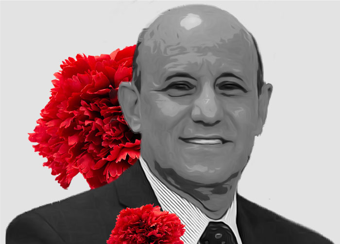
Luque trabajó casi 20 años en el Banco Guayaquil.
Estuvo en la Bolsa de Valores de Guayaquil, fue vicepresidente del Banco Amazonas y también fue vicepresidente Comercial y de Banca Personal del Banco Guayaquil, el emporio financiero de la familia del presidente Guillermo Lasso, con quien trabajó casi 20 años, siempre en posiciones de confianza.
El poder, que no solo trajo grandes responsabilidades sino cuantiosos beneficios irregulares, fue entregado en bandeja de plata por el mismísimo Primer Mandatario. El 18 de agosto de 2021, Lasso firmó el Decreto Ejecutivo 163 que dio una poderosa responsabilidad al Gerente de las empresas estratégicas. El presidente cambió las reglas jurídicas para este nuevo puesto. El expresidente Lenín Moreno había establecido que los directorios de estas instituciones estuvieran conformados por el Gerente de la Empresas Estratégicas, por los ministros de cada área y por el delegado presidencial. Pero la dirección de cada directorio estaba en manos de los ministros.
Vía decreto ejecutivo, el actual Presidente, por el contrario, concentró el poder de decisión en la figura de Gerente de Empresas Públicas, quien asumió el puesto con el Decreto 107, como delegado directo de Guillermo Lasso. Luque Lecaro quedaba así ungido por su ex jefe en el Banco Guayaquil y hoy Presidente de la República, como el amo y señor de una estructura empresarial pública con poder de contratación por 14.000 millones de dólares.
Una evidencia de la confianza que Lasso tenía a Luque también está en el Decreto Ejecutivo 261, del 20 de noviembre del 2021, donde lo nombra coordinador del Gabinete Sectorial de las Empresas Estratégicas. Esta fue una decisión para organizar el trabajo del Ejecutivo, entregando a los coordinadores de diferentes áreas la supervisión y ejecución de las políticas oficiales. Precisamente son las empresas estratégicas, las que hoy son investigadas por todas las autoridades de control del Ecuador.
Luque, tenista y visitante frecuente del Tenis Club de Guayaquil, estaba comprometido a entregar informes permanentes a Iván Correa, entonces el segundo hombre con más peso político en el Palacio de Gobierno. Correa fue otro de los exejecutivos del Banco Guayaquil que Lasso llevó a trabajar con él al Gobierno. Él siempre fue parte de su círculo íntimo, luego de dejar la entidad bancaria, estuvo junto a él en todas las campañas políticas, llegando incluso a gerenciar la exitosa contienda electoral de 2021. En Carondelet, sería el reemplazo del presidente en el manejo del Gabinete como Secretario de la Administración.
Toda la responsabilidad de las empresas estratégicas recaería entonces en el gerente de las empresas estratégicas, personificado por Hernán Luque, quien según la Secretaría de Educación Superior no tiene título registrado, pero fue presentado por boletines oficiales de comunicación, tras su nombramiento, como una persona con “basta preparación académica en BS Finanzas en Florida State University, y en Administración de Empresas en el Tecnológico de Monterrey”.
En la política ecuatoriana a nadie le tomó por sorpresa ese nombramiento ni las nuevas responsabilidades. Guillermo Lasso conocía muy bien a Luque, no solo como subordinado, sino como invitado frecuente de su cuñado, Danilo Carrera Drouet, a la cancha de tenis de la familia.
Esa cercanía explica la respuesta desmedida con la que Guillermo Lasso, durante la segunda semana de publicaciones, decidió convertir a Luque en el chivo expiatorio a sacrificar por la corrupción gubernamental.
Este equipo hizo públicos audios de una conversación, transmitida por fuentes reservadas presentes en la discusión, entre el funcionario Hernán Luque y el operador Rubén Cherres. El Presidente acababa de aterrizar en Davos, Suiza, cuando escuchó lo siguiente:
El patrimonio declarado de Luque cayó a $238.072 en un año.
“Yo preferiría que me des $150.000 mensuales. A mí como me da tranquilidad esa huevada en mi cabeza. El momento que haya más que eso, lo ahorras para un año después, ahí ves. Ya sabe mi primo… Vamos a ir a abrir las cuentas en Andorra”.
Lasso vio la publicación, según su equipo cercano, en el mismísimo avión presidencial. Fue la mañana del lunes 16 de enero de 2023, era de tarde en Europa. El Presidente no tardó ni dos horas en redactar un oficio dirigido a la Fiscalía General que, entre otras cosas, disponía que “el Ministro del Interior y el Comandante General de la Policía Nacional efectúen con urgencia todas las tareas que sean necesarias para ubicar” a Rubén Cherres y a Hernán Luque. Lo que no ocurre hasta el día de hoy.
Era la segunda carta que remitía a la Fiscalía, en menos de 24 horas, la noche anterior había pedido lo contrario, que se cerrara esta “absurda” investigación por falta de elementos. El Mandatario justificó su cambio de actitud, una semana más tarde, en una entrevista con el periodista Milton Pérez, transmitida en cadena nacional. Lasso se mostró visiblemente afectado y casi quiebra su voz cuando rememoró el hecho: “Sentí indignación cuando escuché el audio. Esa voz es la voz de Hernán Luque. Él traicionó la confianza que se depositó en él”.
Pero no fue la única vez en la que el presidente cambió de postura. En esa misma entrevista, cuando habló sobre Hernán Luque, lo calificó como “un torpe”. Aseguró que le pidió la renuncia porque “no tenía confianza de que (Luque) habría entendido que el Gobierno lucha contra la corrupción. Que no damos un solo espacio a la corrupción”. Exactamente un mes antes, en una entrevista con Carlos Vera, aseguró algo distinto: “La gente renuncia y se quiere ir, cambiar de posición. Yo qué puedo hacer”. Así evadió la pregunta sobre los motivos que apartaron a Luque del Gobierno, días antes del escándalo.
Luque llegó a la gerencia de las empresas estratégicas con un patrimonio declarado de $587.434, que incluían una casa en Guayaquil, avaluada en $336.000; una oficina de algo más de $19.000; dos cuentas bancarias por $22.198 y acciones otros $105.000, según los registros a los que tuvo acceso este equipo.
Un año después, en diciembre de 2022, aseguró que perdió dinero en su aventura política. Ante la Contraloría General del Estado juró que su patrimonio cayó a $238.072; ya no tenía ni la casa ni la oficina; apenas registró $56 en dos bancos y deudas por pagar de $110.318. Básicamente, en papeles oficiales, estaba quebrado.
Las investigaciones intentan determinar cómo ese funcionario, que abandona el Estado en número rojos, podía tener conversaciones como la reproducida a continuación. Se trata de una cita de negocios entre Luque y Cherres, publicada por este medio, que inicia con una llamada en altavoz:
—Te saluda el hermano de Javier, el hermano de Javier. ¿Ya? Ok. —dice Cherres, con un vozarrón. Su hermano, precisamente es Javier Cherres. Y continúa:— Necesitamos alguien que conozca. Manda el currículum lo más rápido posible.
Cuelga.
—Ahí en Flopec sí se pueden hacer cosas. Una vez que pongas… —responde Luque.
—Así es, tal cual. Así es, de acuerdo —interrumpe Cherres.
—Eso vale millones de millones. Y afuera, con los pools (consorcios).
—Con los pools—dice Cherres, en señal de confirmación.
— Muerto de risa.
—Muerto de risa —dice Cherres, quien a esas alturas parece un eco más que un interlocutor.
—Brother, Flopec es belleza —Luque trata de desarrollar la idea—, pero bien manejadito. Bien manejadito.
______________
La conversación íntegra gira entonces alrededor de la Flota Petrolera de Ecuador (Flopec), una de las poco visibles pero jugosas empresas públicas, que Luque y Cherres y la estructura alrededor llegaron a controlar con más de $800 millones en presupuesto anual, según los informes financieros de 2022.
05Un negocio “bien manejadito”
Flopec: “bien manejadito”.
La Flota Petrolera de Ecuador (Flopec) fue creada en la década de los setenta del siglo pasado para transportar el crudo y sus derivados ecuatorianos al mercado internacional. Su manejo es vital para la economía nacional, pero “bien manejadito” llena las billeteras de grupos de corrupción.
El exgerente de la Empresa Pública Coordinadora de Empresas Públicas (Emco), Hernán Luque, se olía esos “negocios” desde que llegó a su cargo, en julio de 2021. El equipo de investigación de este equipo logró recopilar dos reuniones que dirigió Luque para poner a trabajar a Flopec.
Una de las citas fue con el exministro de Energía, Xavier Vera, otro de los personajes importantes en esta trama. Su nombre fue propuesto por Rubén Cherres. Vera afronta actualmente una indagación penal por supuesto cohecho, luego de una investigación previamente publicada por este medio de comunicación, en julio de 2022, que reveló solicitudes de dinero, falsificación de documentos y otros presuntos ilícitos. Dicha investigación le costó el cargo y el allanamiento a su vivienda por parte de Fiscalía.
La otra reunión fue con Juan Carlos Bermeo, considerado como el hombre duro de Flopec. En una grabación a la que accedió este equipo, Luque afirma que “en Flopec se han llevado la plata en sacos” y que “tiene los estados de pérdida y ganancia de los dos pools con los que trabaja Flopec en Panamá”, con diferencias de cerca de $21 millones ocultados a los registros del Estado ecuatoriano.
Él sostuvo que ambos reportan utilidades para Flopec y que Oswaldo Rosero, quien se convertiría en el gerente de Flopec después de esa conversación con Cherres, “es de primera”. Era su candidato. La intención de Luque era ubicarlo nuevamente en la empresa como asesor porque necesitaba “alguien que haga las cosas bien hechas, que haga negocios”.
Este equipo de investigación pudo comprobar que lo que decía Hernán Luque se cumplió, como letra sagrada y a detalle en Flopec. Los “pools” que menciona Luque se vuelven indispensables en la red de corrupción. Los pools son una compleja trama de intermediación, aprovechada por la estructura, porque manejan dinero público, pero no se encuentran bajo el radar de las entidades de control del Ecuador.
Flopec no tiene logística financiera para moverse en el mercado internacional, entonces necesita el respaldo de consorcios, generalmente conformados por varias empresas navieras, que funcionan como operadores logísticos encargados de optimizar los viajes de los buques petroleros. Es decir; se encargan de sacar la carga de crudo de Ecuador hacia destinos internacionales. Si los buques volvieran vacíos, a su regreso al país, se generarían pérdidas. Esa es la razón de ser de los ‘pools’.
Flopec mantiene acuerdos con dos ‘pools’ que operan frecuentemente en Panamá. El principal de estos es Amazonas Tanker, que está conformado de forma poco convencional: no tiene a varias navieras como socias, sino que tiene como representante a Amazonas HOLDING LLC, una empresa manejada por el señor Ty Shimano, quien a su vez trabaja para Core Petroleum, que a su vez tiene como asociada a Dragun S.A., cuyas conexiones societarias desembocan en Gunvor, tristemente célebre para los fiscales anticorrupción del Ecuador. Gunvor es una empresa envuelta en escándalos de corrupción durante la administración de los expresidentes Rafael Correa y Lenín Moreno, por las preventas de petróleo que realizó Ecuador a PetroChina. Es decir, las mismas empresas que formaban parte de la red de corrupción durante los gobiernos anteriores. El presidente Guillermo Lasso prometió en abril de 2021, aún en condición de mandatario electo, “romper las cadenas de la corrupción de la intermediación petrolera”, en una entrevista con este medio. La referencia era una declaración indirecta contra el empresario Enrique Cadena Marín.
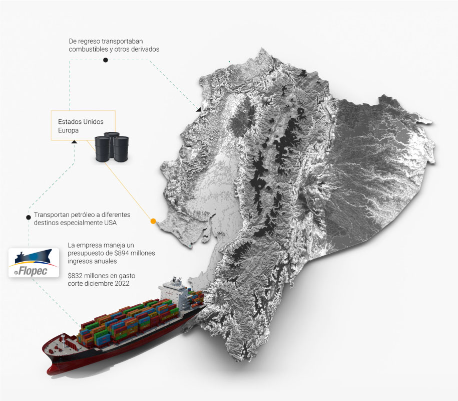
La empresa Amazonas Tankers tiene su sede en las Islas Marshall (Oceanía), un paraíso fiscal. En noviembre de 2021, el informe DNA8-TVIPyA-0012-2021, firmado por Carlos Varela Núñez, director nacional de Auditoría de Transporte de la Contraloría, determinó que el acuerdo firmado entre Amazonas Tankers y Flopec le generó un perjuicio de $6.1 millones al Estado. Es que, según estaba establecido, la flota que maneja Amazonas Tankers debía estar compuesta por barcos de Flopec y otros alquilados. Sobre estos últimos pesan las irregularidades. Se trata de los barcos Emerald Spirit, Sea Bay, Sea Falcon, Chio Lion y Alyarmouk. De acuerdo al análisis que hizo la Contraloría, Flopec gastó más en el alquiler de los buques, que la utilidad generada por los mismos. Entre marzo y diciembre de 2020, iniciaron los perjuicios económicos para la empresa. Los ingresos generados por los buques propios y alquilados de la empresa pública de transporte de crudo fueron de $41.5 millones, y cuando se repartieron las ganancias, Flopec recibió apenas $35.4 millones. Es decir; la empresa estatal perdió $6.1 millones.
El perjuicio tiene una explicación. Los ‘pools’, según el informe financiero interno de Flopec GCO-003-2022, expuesto por este equipo, arrendaron los buques con precios muy por encima del mercado. Los sobreprecios varían desde los $ 4,975 hasta los $ 9,220, por viaje. Esta modalidad, denominada Time Charter, acumuló las millonarias pérdidas anuales. La recomendación de Contraloría fue terminar el contrato con el ‘pool’. Recomendación, en lenguaje de Derecho Público, no es una sugerencia, sino una declaración vinculante y de obligatorio cumplimiento. Pese a esto, Flopec no sólo no cumplió, sino que Hernán Luque hizo todo lo posible por impedirlo.
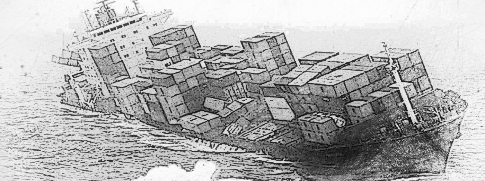
Los buques alquilados por los pools costaron más de lo que produjeron.
El 1 de febrero de 2022, un informe interno de Flopec, recomendó renovar y extender estos acuerdos, sin siquiera intentar una contratación directa con los dueños de la flota. Esa recomendación del Directorio de Flopec, presidido por Luque por designación presidencial, fue desacatada por el entonces gerente de la empresa estatal, Johnny Estupiñán. Esa decisión, de negarse a continuar con un contrato perjudicial para las arcas públicas, le costó el cargo. La resolución DIREC-FLOPEC-004-2022, del 9 de marzo de 2022, justifica la “inmediata” separación del cargo del gerente general, por “no acatar” la disposición de sus superiores.
El vicealmirante Johnny Estupiñán puso al tanto de este hecho evidentemente irregular al presidente de la República. El oficio JEE-011-22-O, firmado por Estupiñán, relata estos antecedentes por escrito a Guillermo Lasso y —dice el documento—, “sustentado en su política anticorrupción” solicitó una cita en Carondelet para poder explicar “el oneroso perjuicio” al que se estaba arrastrando al Estado. Nunca fue recibido. Pero el documento quedó allí como una segunda evidencia documental de un presidente informado por escrito de las andanzas de Luque Lecaro.
El gerente general que reemplazó a Estupiñán y puso en marcha la renovación con perjuicios millonarios fue Oswaldo Rosero, a quien Luque describió como “de primera” en la conversación con Rubén Cherres, cuando buscaban un reemplazo para el cargo. Rosero nunca atendió la solicitud de comentarios de este medio, pero fue desvinculado del cargo, tras estas investigaciones, por decisión gubernamental.
06Que “todos ganemos” con el petróleo de la nación
Petroecuador, la meca de la corrupción.
Petroecuador no es solo la mayor empresa pública de la nación, sino también la meca de la corrupción desde hace varios años. En la última década, seis gerentes generales han sido investigados, procesados o condenados por corrupción, incluyendo a dos gerentes denunciados como parte de la estructura del Gran Padrino, Ítalo Cedeño y Hugo Aguiar, ambos fueron nombrados en sus funciones por el presidente Guillermo Lasso.
El equipo de investigación de este equipo encontró contratos con irregularidades en los términos de referencia, sobreprecios en contrato, la participación de un gerente en funciones de reuniones donde se tratan “negocios” por fuera de la Ley y un caso de coimas a privados desde la petrolera para facilitar pagos.
Por citar un ejemplo, del manejo contractual obtuso de la red, este medio halló un posible direccionamiento de un contrato de la petrolera para beneficiar a la empresa Vladmau Construcciones, de la cual es propietario Álex Bravo, un exgerente de Petroecuador, quien guarda prisión por una sentencia de delitos contra la administración del Estado. El referido contrato es de diciembre de 2022 y tiene como razón el mantenimiento al corazón de la Refinería, la central FCC, donde se convierte el crudo en combustible. En los términos de referencia se pedía una experiencia específica, una que solo la empresa de Bravo podía aducir. Que “se certifique que en los últimos cinco años se hayan colocado refractarios en refinación”, dictaban los pliegos. La única empresa en el país con esa experiencia era la del condenado por corrupción. Petroecuador echó abajo la contratación inminente, una vez expuesta la referencia.
Para hacer frente a estas denuncias, Petroecuador, dirigida entonces por Hugo Aguiar, un reputado abogado administrativista con formación en Harvard, aseguró haber implementado al menos “6 mecanismos de lucha contra la corrupción”, en un boletín público sin firma. Un intento por traspasar la responsabilidad a la administración que antecedió a la de Aguiar.
Pero la corrupción terminaría por salpicar al despacho del entonces gerente de Petroecuador:
Primero, fueron los documentos de una contratación en marcha. este equipo reveló cómo el presupuesto para colocar una turbina termoeléctrica se triplicó sin justificación alguna. En el 2022, bajo la administración del exgerente Ítalo Cedeño, el presupuesto para la obra se fijó en $4 millones, pero con Aguiar, la proforma se incrementó a $12 millones. Estos documentos constan en los documentos de contratación de la petrolera.
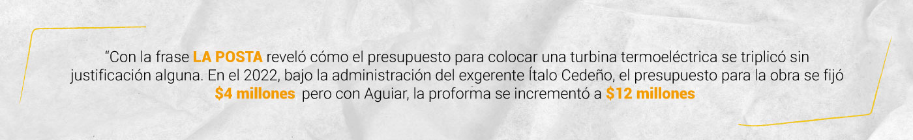
“Para que todos ganemos”: la coima escondida en una mediación.
La salpicadura se convertiría en mancha, en febrero de 2023, cuando este equipo de investigación hizo pública una llamada, hecha por una exfuncionaria de Petroecuador, María José Romo. En la conversación, Romo aborda a José Rafael Félix, abogado de la compañía proveedora del Estado, Areasurvey, quien se encontraba —y se encuentra— en litigio con la petrolera estatal Petroamazonas, absorbida por Petroecuador. Romo es directa, asegura llamar en nombre de César Pazmiño, quien a la fecha de la publicación era uno de los gerentes de confianza de Hugo Aguiar, y propone al interlocutor agilizar un pago para la compañía privada, escondiendo un soborno en el proceso de mediación. Petroecuador, dice la abogada Romo, haría una contraoferta de $5,5 millones para liquidar un proceso de mediación. De allí saldría el soborno. La conversación se retrata así:
— O sea, entiendo que Petro me va a emitir una contrapropuesta a los correos de nosotros. A los correos designados. Y nos va a decir: 5.5. ¿Y en qué términos nos va a hacer esa contrapropuesta? —la pregunta no es ingenua, el abogado de la compañía quiere que la oferta ilícita sea explícita. Aerasurvey, la compañía involucrada, aseguró a este medio que la extorsión tuvo lugar, que la contraoferta llegó a sus manos, pero que nunca hicieron el pago.
—A ver, ahorita lo que estamos conversando es, eh… Obviamente, las, las… Personas de Petro… Para que todos ganemos —la funcionaria Romo da vueltas, rodea, como si le costara concretar el pedido, hasta que se anima—, la propuesta es así: Darles 4.5 para ustedes, para Areasurvey y lo que tenga que ver. Y ellos quieren cogerse el millón aparte.
—¿Quienes son ellos?
—El equipo de César (Pazmiño), Bejamín y todos los que estamos en el equipo de desembolso.
La extorsión evidenciada cayó como una bomba en la ya agitada Petroecuador de Hugo Aguiar. Pazmiño ocupaba un cargo de confianza del gerente general de Petroecuador, quien fue el único gerente de empresas públicas ratificado en su cargo, por decisión presidencial, luego de que iniciara la investigación.
César Pazmiño negó los hechos. Pero Petroecuador tardó solo un par de horas en pedir su renuncia. En una carta remitida a este medio, posterior a la publicación, el funcionario rechazó que su nombre se viera vinculado y advirtió que denunciaría la “toma de su nombre” ante la Fiscalía. La Fiscalía General, sin embargo, fue más rápida.
Al día siguiente de estas publicaciones, la casa de César Pazmiño fue allanada. También la casa del exgerente general de Petroecuador, Ítalo Cedeño, y la de su sucesor en funciones, Hugo Aguiar. Además, la Fiscalía allanó con actos urgentes la Gerencia General de Petroecuador y el mismísimo Palacio de Gobierno, Carondelet.
Ante la magnitud de los hechos, el Gobierno, que había ratificado a Hugo Aguiar en el cargo, una semana antes, convocó de forma extraordinaria al Directorio de la empresa pública y se decidió por unanimidad prescindir de los servicios del gerente general.
07El Gobierno lo supo y no hizo nada
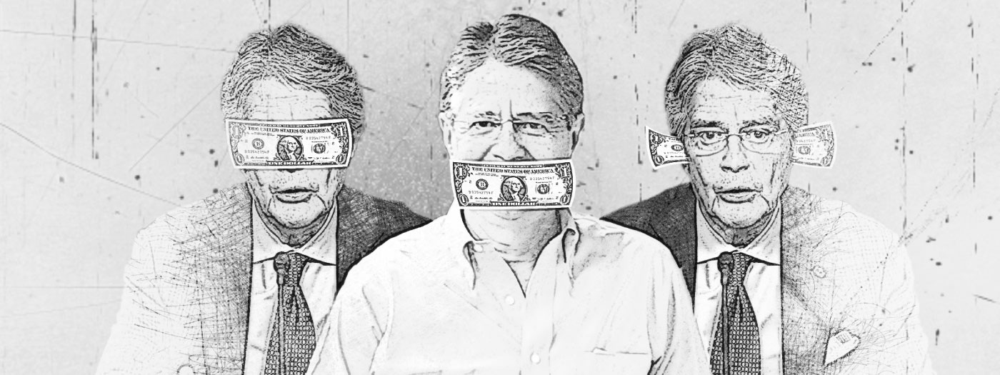
El Gobierno lo supo y no hizo nada.
Fue una sorpresa para el equipo de investigación y para la audiencia, pero no para el Gobierno Nacional. No solamente, como se evidenció, los altos mandos —el presidente de la República, el secretario de la Administración, el gerente de EMCO, y los gerentes de empresas públicas—, habían recibido comunicaciones con denuncias documentadas de presunta corrupción, en fechas que hoy resultan tan lejanas como el 6 de junio de 2022. Sino que, además, los altos cargos de Carondelet estaban al tanto de la participación de personas ajenas a la administración pública en contrataciones estatales, tal y como mostraría este equipo con la filtración de una conversación al respecto, protagonizada por el viceministro jurídico Mauricio Guim.
Mauricio Guim era una de las jóvenes promesas de la Fundación Ecuador Libre, el think thank que sustentó las bases ideológicas sobre las que se asentó el plan de Gobierno de Guillermo Lasso. Se doctoró en Ciencias Jurídicas por la Universidad de Virginia y fue profesor universitario en México. Desde allí tomó un avión, en mayo de 2021, para posesionarse como Subsecretario Jurídico de la Presidencia, por disposición presidencial.
Bonachón, bromista y de insultos sueltos en el trato particular, Guim se encargaba de la creación de normas ejecutivas que incluyen, irónicamente, el Decreto número 4 del presidente de la República, el código de ética de los funcionarios gubernamentales. Se separó de Carondelet, a finales de 2022, para ocupar el cargo de Secretario Particular del Procurador General del Estado, un cargo que perdió el día mismo de las publicaciones de este medio, cuando fue involucrado en la trama.
Luego de que el Gobierno negara, en primera instancia, la existencia de una estructura de corrupción, el discurso oficial terminó por reconocer que la trama tuvo lugar, pero como “un caso individual y aislado”, como lo llamara el secretario general Iván Correa. De hecho, en la mayoría de entrevistas sobre el tema, los funcionarios gubernamentales, deslegitimaron inicialmente la investigación porque se trataba de una persona sin credibilidad. Puntualmente, el entonces ministro de Gobierno, Francisco Jimenez, sentenció: “Para el Gobierno, el señor Cortázar es inexistente”.
Otra sería la historia, cuando quien ratificaba la participación de actores de la red, fue un exviceministro, Mauricio Guim.
—Te voy a decir cómo es la vuelta —dice Guim a un interlocutor, cuya identidad ha sido protegida por este medio—. (Jorge) Orbe sí tiene contacto con un ministro. Y el ministro con el que habla es Hernán Luque, es Hernán Luque… Orbe tiene su pedazo de poder. Tiene un pedazo de Celec y un pedazo de Cnel.
Esa descripción, confirmada en esta conversación de inicios de 2022, cuando Mauricio Guim trabajaba en Carondelet, a pocas puertas del despacho presidencial, desencajó el discurso oficial de negación. Mauricio Guim, quien nunca atendió las solicitudes de comentarios de este medio, no sólo no denunció los ilícitos que conocía —por ejemplo, extorsiones a proveedores del Estado y manejos irregulares de contrataciones—, sino que además, a las pocas horas de emitido el programa del 8 de febrero de 2023, huyó.
La Fiscalía General y la Policía Nacional impidieron su salida del país, cuando se encontraba a pocos kilómetros de la frontera colombo-ecuatoriana, por donde no se registró para pasar. Se dispuso su retención provisional con fines investigativos y luego de ocho horas de interrogatorios infructuosos, se acogió al derecho al silencio, salió en libertad. Las autoridades retuvieron su computador y teléfonos personales.
Mauricio Guim fue incluído en las investigaciones, así como su compañero, el también viceministro jurídico Marco Miranda, con quien Guim asegura haber tenido reuniones de negocios sobre asuntos petroleros en casa del exgerente de Petroecuador Ítalo Cedeño. Miranda también perdió su cargo y su casa fue allanada por la Fiscalía General.
La reacción gubernamental fue inesperada. El presidente provocó, al día siguiente de la detención de su exviceministro, la mayor crisis de Gabinete de la que se tenga registro: su principal asesor, Aparicio Caicedo; su secretario general, Iván Correa; su ministro de Gobierno, Francisco Jiménez; su secretario jurídico, Fabián Pozo. El Gobierno justificó esta decisión por el duro revés electoral, tras la derrota que sufrieron en las urnas el 5 de febrero de 2023. Para muchos analistas, la renuncia masiva fue un abandono del barco.
08En Celec Cortázar y Orbe llevaban su tajada
Celec, repartida como un tesoro de piratas.
La Corporación Eléctrica del Ecuador (Celec) también fue repartida como un tesoro de piratas. Una parte llegó a Leonardo Cortázar, de acuerdo con su propia confesión a este equipo. Otra tajada cayó en poder de Jorge Orbe, según la confirmación que hizo Mauricio Guim, uno de los funcionarios millenials del Presidente.
Guim confesó sin remordimiento la repartición de las empresas estratégicas y esa revelación quedó grabada. “(Jorge) Orbe tiene su espacio de poder. Tiene un pedazo de Celec y también tiene otro pedazo de Corporación Nacional Eléctrica (Cnel)”. Sus palabras ratificaron también la declaración de Cortázar y cerraron el círculo de este caso de corrupción: las empresas más importantes de Ecuador fueron repartidas gracias a la influencia de Rubén Cherres y del cuñado del presidente, Danilo Carrera.
De los 1.500 contratos analizados, destacan cuatro procesos de Celec, relacionados con la erosión del río Coca que afecta a la hidroeléctrica Coca Codo Sinclair, la central más potente del país, que genera cerca del 65% del suministro de energía para la industria y el país. Dos de los contratos están vinculados a consultorías internacionales, donde uno de sus estudios, buscaban soluciones para la erosión del suelo. Según extrabajadores de la empresa, los convenios internacionales no deberían realizarse sin antes agotar las opciones a nivel nacional.
Y no solo es opinión de los excolaboradores, la normativa vigente de contratación pública establece que se agoten los recursos nacionales, antes de buscar proveedores externos. Claro, cuando la mano obra local puede cumplir con las expectativas.
Los convenios internacionales descritos son: Cooperación Técnica Internacional del United States Army Corps of engineers (USACE) y con Rusia Hydroproject de la empresa pública “Institute Hydroproject” en representación de la Federación Rusa. Sobre el de la USACE, el objetivo del contrato era la de contar con la cooperación técnica dentro de la problemática de la erosión regresiva y sedimentación progresiva en el río Coca. Mientras que el de Institute Hydroproject consistía en una asesoría técnica de expertos en la elaboración del estudio de prefactibilidad por parte de la Comisión Ejecutora Río Coca de CELEC EP. Solamente este último convenio tuvo un costo de más de $470.000 dólares y ambos convenios fueron suscritos por Gonzalo Uquillas, gerente de CELEC.
Ahora, entre las soluciones que se plantearon en su momento, se resolvió la implementación de una presa permeable. No obstante, la construcción de la misma nunca se produjo y el riesgo de la hidroeléctrica Coca Codo aumentó. Actualmente, se lleva a cabo otra obra respecto al mismo tema. Se trata del proceso cifrado con el código RCO-CON-0014-21 que destinó 14 millones de dólares para la construcción de obras de protección para controlar la erosión del río Coca. Este contrato era radicalmente importante para la economía ecuatoriana. Desde el 2021 se presenta una descontrolada y nunca antes vista erosión del río Coca, en la Amazonía ecuatoriana. Este proceso natural tiene en un suspiro a la zona de captación de la hidroeléctrica Coca Codo Sinclair.
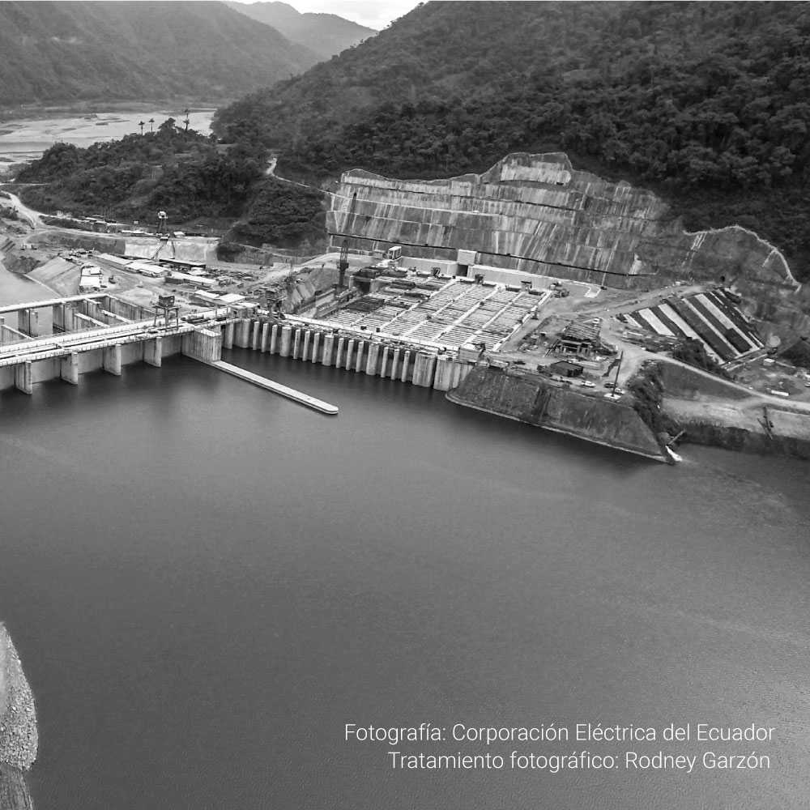
Corporación Eléctrica del Ecuador.
En Celec conocían la importancia de este proceso, pero aún así hubo irregularidades. Las más importantes observaciones fue que el contrato tuvo cuatro administradores para los servicios de “perforaciones, geofísicas y ensayos en la zona de erosión del río Coca”.
¿Por qué la importancia de estas obras manoseadas por las sospechas de corrupción? Porque la erosión regresiva puede, literalmente, dejar al país sin una obra de casi $2.000 millones. Sin la planta hidroeléctrica Coca Codo Sinclair que habría generado, según las últimas investigaciones de la Fiscalía General, unos $76 millones de dólares en coimas para el expresidente Lenín Moreno y su círculo más cercano de familiares y amigos.
Esta es una figura que raspa la legalidad de la Ley de Contratación Pública y que el propio Ministerio de Energía tuvo que suspender y denunciar que existe una “sospechosa” actitud del gerente de Celec, Nicolás Andrade, para llevar estos contratos a un régimen de emergencia. La emergencia en contratación, es una figura legal para escoger sin concurso al proveedor y reducir al mínimo los controles previos a la firma de un contrato.
Andrade era también uno de los hombres de confianza del círculo que manejaba en las sombras las empresas eléctricas. Fue retirado de su cargo el 30 de diciembre pasado, días antes de que se revelara su nexo con el Gran Padrino. Tras una pelea con el ministro de Energía, Fernando Santos, firmó su salida del Gobierno, acusado por una mala gestión, no dar mantenimiento a las centrales termoeléctricas y llevar al país a un posible racionamiento eléctrico, algo no visto en las últimas dos décadas.
Su reemplazo fue un nombre repetido en la Corporación de Electricidad, Gonzalo Uquillas. En 2018, en pleno apogeo de la mafia de Cortázar, estuvo al frente de Celec, lo hizo hasta el 2020 con la bendición del ex presidente Lenín Moreno. Ahora ha vuelto a su gerencia con el respaldo de Lasso.
09El día en el que el Gobierno mató al mensajero
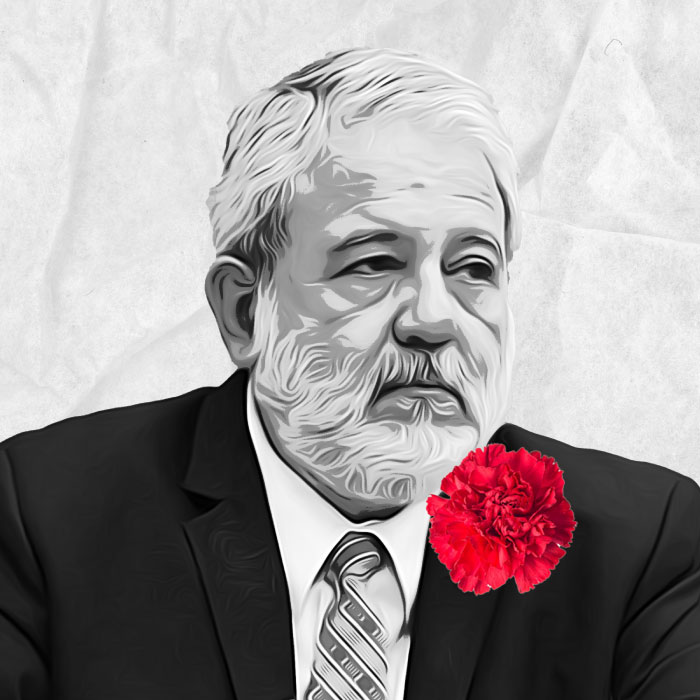
Luis Verdesoto, el mensajero.
El presidente Guillermo Lasso se acomodó en su sillón, a las 09:00 del 23 de enero de 2023, y se aclaró la garganta. Había convocado a su equipo de máxima confianza a su despacho para recibir el informe especial del secretario Anticorrupción, Luis Verdesoto, sobre las denuncias en contra de su Gobierno, publicadas por este equipo. Él mismo había encargado públicamente la investigación interna y se la había anunciado al país. Y una vez en sus manos, comenzó a leerla en voz alta el documento final, según recrearon a este medio testigos presenciales.
En la cita estuvieron el secretario de la Administración, Iván Correa; el secretario Jurídico, Fabián Pozo; el secretario de Comunicación, Andrés Seminario, su consejero, Aparicio Caicedo.
El trabajo de Verdesoto impactó como un meteorito. “Cómo me puedes traicionar así”, le dijo Lasso a subordinado, amigo y consejero. Una cita textual que la confirmaría el propio Verdesoto, semanas más tarde ante la comisión parlamentaria que investigó al Presidente y recomendó su enjuiciamiento político.
Verdesoto fue tremendamente crítico con el propio presidente de la República, por ese decreto ejecutivo. “Esta modalidad puede generar que las decisiones estratégicas que involucren al Presupuesto del Estado recaigan sobre la integridad de una sola persona con su voto dirimente”. Se refiere a Hernán Luque, a quien, como se ha señalado, el Presidente encargó la dirección total de las empresas públicas. El entonces secretario anticorrupción profundizó aún más: “La debilidad institucional quiso solucionarse concentrando poder decisión en EMCO y su Directorio… Pudo haberse convertido en la forma a través de la cual penetre la corrupción interna y externa”. Y fue más allá: “La concentración de información privilegiada podría derivar en riesgos de corrupción”.
La reunión duró tres horas. Hubo intercambios duros. Verdesoto, una figura con peso nacional, académico reconocido, vinculado por más de una década con las organizaciones sociales que luchan contra la corrupción, presentó allí mismo su renuncia. La llevaba impresa y guardada en el bolsillo de la chaqueta. El Presidente intentó convencerlo de no presentar el informe. La rueda de prensa prevista para las 10:30 de ese día fue cancelada. La renuncia de Verdesoto se aceptó inmediatamente, mientras el canciller Juan Carlos Holguín, lo escoltaba hasta la salida del Palacio de Carondelet. Verdesoto no llegó a firmar el documento. Pero se filtró a este equipo y se hizo público.
El informe Verdesoto terminaría por convertirse, semanas después, en una de las piezas clave de la investigación Legislativa que, para esas alturas, había aprobado la conformación de una comisión multipartidista, cuya tarea consistiría en levantar los indicios necesarios para determinar responsabilidades políticas. Verdesoto confirmó ante la Asamblea Nacional que el Presidente le “retiró la confianza” para impedir que el documento se hiciera público. Y la comisión, en un informe de 221 páginas, terminó por recomendar al Pleno del Legislativo el enjuiciamiento político del presidente de la República. La recomendación fue acogida con 104 votos a favor de 137 posibles.
10El Gran Informe
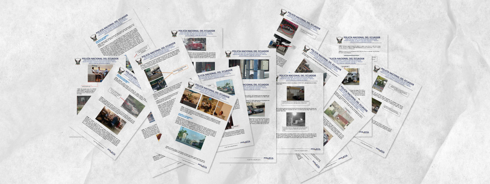
El Gran Informe: la operación León de Troya.
La investigación periodística, para estas alturas, ya había provocado un tsunami político y judicial, sin embargo, tras semanas de averiguaciones y entrevistas reservadas, este equipo logró tener en sus manos un elemento demoledor, que para entonces se había convertido casi en una leyenda: El Gran Informe.
Los vínculos con el narcotráfico de Rubén Cherres, el mejor amigo del cuñado del Presidente, no pasaron desapercibidos para este equipo. Pero tampoco para la oficialidad. Desde junio de 2021, a menos de dos meses de posesionado el presidente de la República, la inteligencia antinarcóticos de la Policía Nacional fichó al mejor amigo de Danilo Carrera en una trama que involucraba a la mafia albanesa. Esa relación cambiaría para siempre la vida de los investigadores y reposaría escondida a la opinión pública hasta la revelación de esta investigación.
El 13 de mayo de 2021, el teniente Rodney Rengel recibió una investigación a cargo: dar seguimiento a HD León, sobre quien una fuente humana había señalado vinculaciones con el narcotráfico, en la costera provincia de Manabí. La orden judicial de seguimiento fue la primera del expediente fiscal No. 13284-2021-033395G, donde el juez de Manta, César Ponce, autorizó la operación secreta, pero legal.
HD (un código policial que significa, Hombre Desconocido, y antecede a los apodos investigativos) León, fue seguido una mañana mientras conducía su auto blanco, de placas GSY-2454, según la cronología relatada en el informe León de Troya, al que este equipo tuvo acceso gracias a la colaboración reservada de fuentes judiciales y policiales. El rastreo los llevó hasta el puerto de Manta, específicamente, a los exteriores de la empresa Osaka Fish, la cual —de acuerdo con el informe policial— sería usada por una estructura criminal asociada a la mafia albanesa como empresa de tapadera para sus operaciones. La Policía cree que en esa compañía se camufló droga y se contaminó exportaciones que, según los socios policiales europeos, dieron positivo en al menos tres envíos a la Unión Europea y Estados Unidos. Osaka Fish ha negado tales acusaciones, en una carta remitida por sus abogados a este medio.
Los agentes hicieron videos con drones y fotografías de todos los que entraban y salían de esas instalaciones. Uno de ellos fue el ya conocido Rubén Cherres, el mejor amigo de Danilo Carrera y socio del albanés, Gjika Dritan, de 46 años, considerado una pieza clave en la red de los narcos de los balcanes. Un hombre temido en el mundo del crímen.
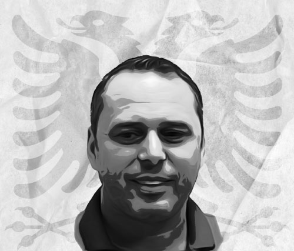
Rubén Cherres, fichado por la inteligencia antinarcóticos.
La Policía tomó a Cherres como el sujeto central de la investigación junto a la mafia albanesa: documentaron sus reuniones e intervinieron, bajo orden judicial, sus comunicaciones. Algunos de esos encuentros, como el del 18 de mayo de 2021, tuvieron como sede la cafetería SkyBuilding de Guayaquil, según detalla la página 9 del reporte León de Troya, proféticamente bautizado así —según algunos de los investigadores— porque su revelación haría “arder troya” en el país. En estos episodios, registra el seguimiento, Cherres comparte con toda la estructura, que incluía a su socio albanés y otros condenados por narcotráfico o requeridos por la Justicia.
Otra cita, más comprometedora aún, tuvo lugar el 4 de agosto de 2021. En el restaurante Zerú, también en Guayaquil, los agentes capturaron imágenes de Cherres contando dinero en efectivo, a vista y paciencia de los comensales, dentro de un sobre manila.
La relación de Cherres con los narcotraficantes internacionales se venía cocinando tiempo atrás, precisamente en 2012, según los registros públicos de la Superintendencia de Compañías, cuando crearon la empresa Cosobrivsa, dedicada a la construcción y que solo tuvo dos años de vida. Luego crearon Construador que la declararon en inactividad en 2016. Su faceta de empresarios siguió en 2018. Ambos fundaron dos empresas relacionadas con los bienes raíces: Inmobitrust y Inmobirealstate, que luego transfirieron con acciones a terceras personas.
Sin embargo, el hecho que más llamó la atención a los investigadores fue que una inspiración emprendedora, Cherres y el albanés crearon, evadiendo todos los controles legales de lavado de activos del país, ocho empresas en un solo día: el 17 de junio de 2021. Es decir durante el seguimiento del equipo de Antinarcóticos y en el gobierno de Lasso.
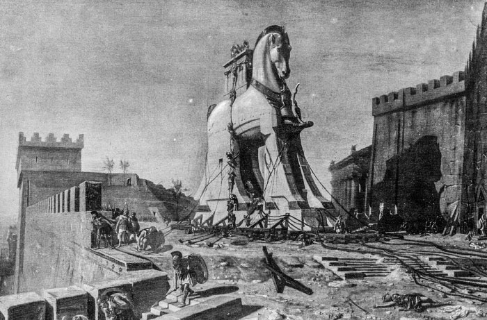
Ocho empresas creadas en un solo día: 17 de junio de 2021.
Estas empresas fueron Trsutal, Drixsa, Drisard, Inducord, Inmord, Bodegsar, Corpsalcorp e Inmosad. Todas las compañías fueron registradas en la notaría de Tercera de Daule y pasaron en solo 10 días los filtros de la Superintendencia de Compañías y del Registro Mercantil de la ciudad de Guayaquil.
La mafia albanesa aterrizó en Ecuador en 2009, con un pequeño grupo que se dedicó a hacer contactos con empresarios que les facilite construir su fachada para empezar con el tráfico de drogas a Europa. Sus operaciones casi fueron inadvertidas, hasta que en el año 2021 empezaron a publicarse los asesinatos a sus allegados.
Una señal de alerta se activó en todas las unidades Antinarcóticos del país. La mafia albanesa empezó a crecer ya tenía operaciones en las provincias de Guayas, Santa Elena, El Oro y Loja, incluso peleaba por territorios a los carteles mexicanos de Sinaloa y Jalisco Nueva Generación y lo hacían con ayuda de bandas delincuenciales ecuatorianas.
Pero la operación policíaca no fue solo seguimientos. La revelación de este equipo incluye los resúmenes de 10.000 transcripciones de llamadas telefónicas que fueron interceptadas, además de una hemeroteca de vídeos y fotos de las reuniones. Esas comunicaciones telemáticas acercaron a Cherres con el palacio de Carondelet y pusieron a la mafia albanesa en línea directa con el despacho presidencial, gracias a la influencia de Danilo Carrera.
En la página 64 del informe de Antinarcóticos se expone una reunión de Rubén Cherres y Danilo Carrera, ocurrida el 14 de julio de 2021. Lejos de ser una cita social, el encuentro tuvo un alto contenido político.
Pero, para comprender el alcance de la cita, es necesario conocer las transcripciones de la interceptación de las llamadas entre Carrera y su amigo Cherres. El 2 de julio de 2021, a las 17:42, por ejemplo, hablaron durante 1 minuto y 45 segundos sobre Víctor Araus, un alto oficial de la Policía que, dos meses después, sería incluído dentro de la lista de los “narcogenerales”, conectado con una declaración que en ese sentido hiciera el embajador de los Estados Unidos en Quito, Michael Fitzpatrick. Días después de esa denominación pública, el gobierno americano canceló la visa del general Araus.
En la llamada, Danilo Carrera asegura que está “a punto de entrar a Carondelet” para conversar con el presidente Guillermo Lasso. Ahí, por disposición de Cherres, se debía defender y respaldar a Araus. El general se encontraba en un controvertido proceso para ascender al grado de general inspector.
Con estas evidencias, los investigadores incluyeron al Gran Padrino, Danilo Carrera, en su lista de investigados y le colocaron el alias “HD Danny”. Sus reuniones y llamadas fueron grabadas.
“HD Danny” volvió a hablar de Araus. Una de las llamadas afirmaba que el general quería agradecer personalmente a Danilo por sus gestiones, tras una reunión en casa del cuñado del Presidente.
El general Araus confirmó a este equipo que estuvo en casa de Danilo Carrera en busca de “apoyo político” y que la reunión “la gestionó Rubén Cherres” por recomendación del entonces ministro de Gobierno, César Monge, quien falleció a mediados de 2021.
Pero el asunto no se limita a los buenos oficios para el exgeneral Araus. En la larga y detallada hemeroteca existen decenas de ocasiones en las que Rubén Cherres y el cuñado del Presidente de la República apadrinaron a personas que terminaron trabajando como funcionarios de Lasso.
Así se habló, gestionó y abogó por subgerentes de Banecuador y ministros como el exencargado de la cartera de Agricultura, Bernardo Manzano, quien tuvo que renunciar luego de que confirmara lo que se decía en esas transcripciones. “Me llamó y me pidió el currículum”, confesó Manzano en una entrevista con Radio Sonorama, tras la publicación, en referencia a su relación con Rubén Cherres, que antes había calificado de casual y “social”.
El informe contenía una gota de veneno político, el supuesto aporte a la última campaña presidencial de Lasso y que fue gestionado por Cherres y sus “socios”. Fue un millón y medio de dólares en pruebas para detectar Covid, medicinas y camisetas. Así lo declara el socio de los albaneses en una de las llamadas interceptadas, a Juan Carlos Reina, hijo del fundador de Banco Guayaquil, Douglas Reina. En la campaña de Guillermo Lasso sus personas más allegadas fueron Danilo Carrera y su consuegro, José Nebot, quienes organizaron un frente de empresarios para apoyarlo. En este grupo también estuvo Cherres, según reveló José Nebot a este equipo, quien confirmó que Cherres colaboró en la campaña de forma activa y que se encargó de conseguir “mascarillas y pruebas covid” para el frente en favor de Lasso.
Meses después, el mismo Cherres revelaba su enojo por sus “socios”, quienes pusieron dinero para la propaganda electoral no tenía la respuesta que quería del Gobierno.
Toda esta evidencia consta en el informe firmado por el teniente coronel Bolívar Zambrano y entregado al fiscal Marcelo Váscones, fiscal de Manta y que ahora está en manos de la Unidad de Delito Transnacionales de la Fiscalía, el equipo élite del Ministerio Público para investigar casos de narcotráfico, lavado, tráfico de armas a gran escala.
Las consecuencias de ese informe, que fue archivado por sugerencia de la Policía Nacional, o sea del Ministerio del Interior, o sea del Gobierno, aún están en desarrollo. El Gobierno negó, primero en un comunicado escrito, y luego en una cadena nacional presidencial, haber participado del cierre de la investigación. En la cadena nacional, el presidente Guillermo Lasso admitió que su cuñado “pudo haber sido poco suspicaz” para escoger a sus amistades. Pero atribuyó la investigación periodística a una conspiración contra su Gobierno en la que involucró a este equipo. El comunicado presidencial fue condenado, días después, por Reporteros Sin Fronteras, con sede en París, y calificado como “un atropello a la Libertad de Expresión”. Carrera, por su parte, había demandado ya a este equipo periodístico por medio millón de dólares, por “afectar su honra”.
A pesar de todos estos elementos, como se dijo, el informe fue archivado en Fiscalía. Y un juez lo declaró “reservado”, pese a que la investigación no corría riesgos, pues había sido disuelta. La reportería de este equipo apuntó a que esta decisión buscaba evitar que los hechos llegaran a la luz pública y que, en el archivo, hubo disposiciones de carácter político. La Fiscalía dispuso la revisión del caso y, finalmente, decidió reabrir la investigación al encontrar nuevos elementos procesales.
Reporteros Sin Fronteras condenó el comunicado presidencial.
11El Gobierno estuvo al tanto.
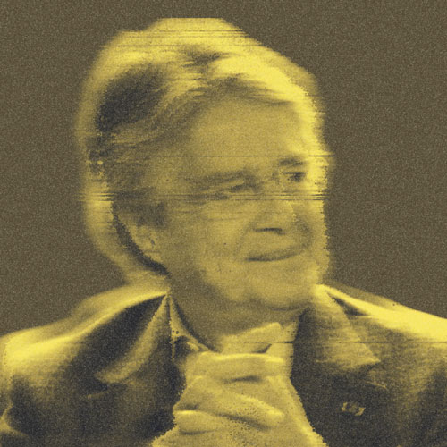
Guillermo Lasso admitió conocer el informe policial.
Guillermo Lasso tuvo que confesarlo: él sí conoció el informe de la Policía Antinarcóticos que vinculaba a Rubén Cherres y a su cuñado y mentor, Danilo Carrera, en una investigación de la peligrosa mafia albanesa. Lo hizo frente a una docena de corresponsales de prensa extranjera, que fueron invitados al Salón Amarillo del Palacio de Gobierno con la condición de que nada de lo que se hablara fuera difundido públicamente, incluso les advirtieron que sería la Presidencia la que les entregue un boletín con los “datos” que podrían revelar. Ninguno de los asistentes publicó algo al respecto.
Uno de los presentes grabó y filtró la conversación. Su declaración fue corta. “Tiene que ver con un proceso de investigación que había iniciado la Policía Nacional que me informaron en el mes de julio (2021). Realmente tomé nota de una investigación que había iniciado en un 10%. Usted comprenderá que no puedo estar informando al Ecuador de cada proceso de investigación que lleva a cabo la Policía. No puedo denunciar la denuncia. La Policía está investigando y continué. Nunca más intervine”, dijo el Mandatario con una voz pausada y cuando se le preguntó si su Gobierno intervino para que se cerrara la indagación responde: “nadie puede salir a demostrar que yo cometí semejante despropósito”. Pero sí se pudo.
Ya en febrero de 2023, el equipo de investigación hizo público algunos elementos que arrojaron sospechas sobre el proceso de desestimación de la investigación.
La reunión que reconoció el presidente, en privado, fue reportada por este medio, tras acceder a las anotaciones de visita de la bitácora de inteligencia militar del palacio presidencial. Tuvo lugar el 7 de julio del 2021. El jefe del equipo investigador de Antinarcóticos, el teniente coronel José Luis Erazo, y la entonces comandante de Policía, Tanya Varela, acudieron a una reunión reservada con el Presidente de la República, que no constaba en la agenda.
En esa reunión, confirmada casi dos años más tarde por el Presidente a uno de los asambleístas aliados al Gobierno, Fernando Villavicencio, le presentaron al Mandatario los hallazgos de su operación contra la mafia albanesa y la conexión con su cuñado. El contenido de esa charla se quedó en el despacho presidencial, pero sus consecuencias se harían públicas meses después.
Ni el teniente coronel Erazo ni la general Varela respondieron a este medio sobre las consultas del contenido de la cita.
Sin embargo, un documento oficial, publicado por este medio, confirmó la sugerencia de cierre con origen policial. El 21 de diciembre de 2021, en el oficio 2021-650-UCTCI-MANTA, el capitán Christian Moya solicitó “de ser factible, el cierre de la investigación previa” del caso León de Troya, al fiscal a cargo. Ese tipo de solicitudes, según los agentes de la unidad, más que inusuales, son casi inexistentes.
Además de esos señalamientos, este equipo, con base en testigos presenciales de una reunión de septiembre de 2021, reportó que el entonces general a cargo de antinarcóticos, Giovanni Ponce, y el entonces general a cargo de la Inteligencia policial, Mauro Vargas, dieron instrucciones verbales para cerrar la investigación al equipo que la había construído.
La Policía Nacional, en un comunicado sin firma de responsabilidad, negó la participación de ambos oficiales o de la institución.
Sin embargo, el equipo de este medio detalló cómo, el parte de disposición firmado por el mencionado jefe de Policía Antinarcóticos, general Giovanny Ponce, se ordenó cambiar al equipo que estaba trabajando en esta investigación. Entre octubre de ese año y enero de 2022, los 14 oficiales fueron removidos de la unidad y enviados a prestar servicio en zonas donde su vida, como agentes de inteligencia que habían llevado casos de narcotráfico, corría evidente peligro. Uno de ellos fue el teniente coronel Erazo, quien fue transferido al sur de Guayaquil, la zona más sensible de las operaciones de las bandas de narcotraficantes. Algo similar pasó al resto de sus compañeros.
Ante esta revelación, en 2023, la Policía Nacional dio nuevamente un pase al antiguo equipo de investigación para trabajar desde Quito. Tres de los miembros de la unidad recibieron amenazas de muerte: “si te presentas a la Asamblea eres hombre muerto” (sic), decía una de los mensajes, remitidos a Erazo, según de la denuncia que consta en Fiscalía. Sucedió el mismo día en el que la comisión parlamentaria, que investigaba la responsabilidad política del Presidente de la República, convocó a los uniformados a comparecer. Ningún policía recibió autorización para hacerlo. Ninguno entonces pudo responder si la desarticulación paulatina, pero violenta de la unidad llevó al caso hasta el anhleado naufragio.
12“Esto hay que cerrarlo”
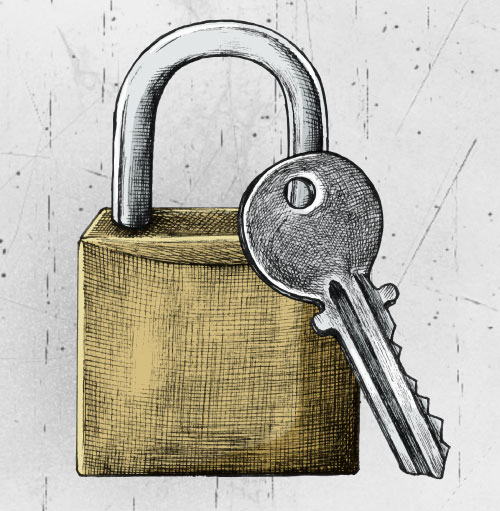
“Esto hay que cerrarlo”.
Negarlo no bastó.
El equipo de investigación de este equipo probó la ilegal disposición política que el mando de la Policía Nacional hizo a sus subalternos con el ánimo de cerrar la investigación narcopolítica, tal y como se desprende de la filtración de distintos audios, aportados a este medio por participantes de estas citas clandestinas.
En una reunión, convocada por los generales Mauro Vargas (Inteligencia) y Giovanni Ponce (Antinarcóticos), a la que asistió parte del equipo investigador del caso León de Troya, se decidió el futuro judicial de la impunidad. El ambiente era tenso, la investigación había avanzado demasiado.
“¿Cuántos casos nosotros hemos investigado?”, pregunta el general Ponce. No espera que nadie le responda, es retórica. “Pero precisamente, en este que está metido el Presidente, nosotros estamos metiéndole todo el corazón”. La reflexión suena a reproche. Porque lo es. Así que, a paso seguido, da la orden: “Yo creo que esto deberíamos cerrar. Porque esto, mañana, le va a afectar al Presidente”. Una voz lo respalda. “Sí, yo también creo eso”, dice el general Vargas.
La conversación abunda en detalles. Deben cerrar la investigación previa y abrir una nueva “por lavado de activos” o lo que sea, de tal forma que el esfuerzo de investigación de la Policía Nacional se enfocara en los narcotraficantes y no en los vínculos políticos. De otra manera, concluye Ponce, “el presidente me va a decir: ustedes me están investigando”. Así de simple fue y la investigación en realidad, no llevó a ningún lado. Cherres siguió operando y jugando tenis con el poder y los albaneses operando su oscuro negocio.
La cúpula policial en pleno abandonó su deber constitucional de proteger a los ciudadanos y decidió, de forma oculta y contrario a lo que habían admitido, proteger al poder político.
La propia comandante general de la época, Tanya Varela, estuvo al tanto de la decisión de cierre. “Yo fui bien clara con Mauro Vargas: a mí no me importa esto, si quiere bajarle, bájele”, con esas palabras permitió el archivo ilegal del informe, según otro audio, correspondiente a una reunión de septiembre de 2021, en la Comandancia General de la Policía Nacional, y también hecho público por este equipo. Pero no solo eso. Varela, sin saber que estaba siendo grabada, confiesa que el presidente de la República violó la reserva de la información para advertir a su cuñado, sujeto de la investigación, sobre la misma. “Yo sé que el Danilo Carrera no entra porque el Presidente me llamó a mí a la Presidencia y me dijo, esto dice: Ya no va a hablar, se acabó”. Las coincidencias son peculiares. Luego de que Lasso habría advertido a su cuñado, todos los investigados cambiaron sus teléfonos para evitar las escuchas.
Ninguno de los generales ni la Policía Nacional atendieron los pedidos de comentario de este medio de comunicación.
El mismo día de la publicación, a pesar de la negación presidencial, el Gobierno desvinculó a Vargas y a Ponce de sus cargos en el alto mando de la Policía Nacional.
13El gran terremoto político.
El gran terremoto político.
Nunca antes una investigación periodística había generado tales efectos políticos y judiciales, pese a los riesgos y amenazas recibidas por el equipo de reporteros, algunas de ellas provenientes del propio palacio presidencial.
A raíz del 9 de enero, la Fiscalía General del Estado abrió ocho investigaciones relacionadas con esta trama de corrupción y narcotráfico. Los procesos investigan delincuencia organizada, cohecho, concusión, narcotráfico y tráfico de influencias. Al menos 80 personas han sido llamadas a rendir versión, ha habido 12 allanamientos a propiedad privada y oficinas públicas, y los cuerpos judiciales acumulan miles de páginas en las investigaciones en curso, todas con fuero de Corte Nacional de Justicia; es decir, se investiga el cometimiento de delito por parte de altos funcionarios del Estado.
Por su parte, la Contraloría General del Estado, el juez de cuentas de la Nación, ha iniciado exámenes especiales a un centenar de contratos en los sectores eléctricos y petroleros, que alcanzan la suma de al menos $ 1,000 millones, bajo sospecha de irregularidades. La revisión contractual podría derivar en nuevas determinaciones de responsabilidades administrativas o penales.
La Asamblea Nacional del Ecuador activó un mecanismo de fiscalización que no había sido invocado nunca contra un jefe de Estado en funciones bajo la actual Constitución, el juicio político contra el presidente de la República, bajo la causal de haber cometido “delitos contra la administración del Estado”. La oposición logró la activación del artículo 129 de la Constitución, que invoca las causales de juicio político. Y por primera vez en 90 años, se llevó a cabo un impeachment contra un presidente en funciones, el 16 de mayo de 2023, en el Pleno de la Asamblea. A la madrugada siguiente, el Gobierno disolvió el Parlamento. Y el Consejo Nacional Electoral convocó a elecciones anticipadas.
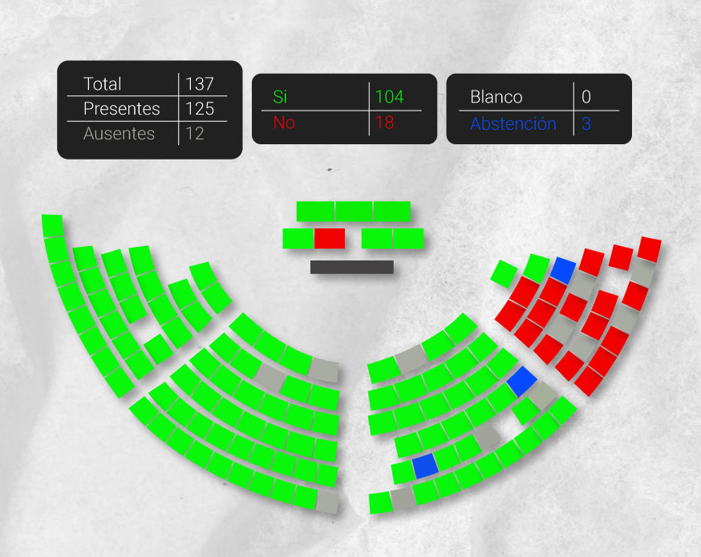
104 votos a favor del juicio político.
El Gobierno Nacional decidió la desvinculación de tres ministros de Estado, dos viceministros, seis gerentes de empresas públicas y dos generales de la República. Y la popularidad del presidente Lasso cayó al mínimo histórico de 8% de aceptación, según sondeos de opinión pública.
Al momento de la publicación de este trabajo, no existe un solo detenido, Lasso sigue negando hasta el cansancio su participación, pero ha marcado distancia del Gran Padrino.
14Mataron al hombre que sabía demasiado
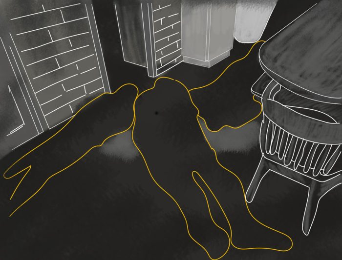
Punta Barandúa, a menos de un kilómetro de la casa de playa del Presidente.
Los asesinos fueron despiadados. Los ataron para que no pudieran defenderse, los torturaron y dispararon. A quemarropa. Tantas veces como les fue posible.
Así fue la escena del crimen donde fue encontrado Rubén Cherres, el mejor amigo de Danilo Carrera, quien había logrado burlar a la justicia ecuatoriana por al menos 70 días, desde que su nombre y cara aparecieran en las primeras publicaciones de esta investigación. La Fiscalía impulsó su detención para que entregara su versión en las investigaciones abiertas por los presuntos negociados en las empresas estratégicas del Estado.
Su testimonio era clave en la indagación que ejecutan los equipos especiales de la Fiscalía.Tal vez, demasiado clave. Fue Rubén Cherres quien conversó con Hernán Luque –en la grabación que significó el principio del fin– sobre los 150,000 dólares y la cuenta en Andorra. Fue Rubén Cherres quien llamó al cuñado del presidente para ofrecerle currículos, que luego terminaron por ser nombrados en cargos públicos con rango de ministros. Fue Rubén Cherres quien mantenía el contacto con la mafia albanesa, según los registros de la Policía Antinarcóticos.
La lista de indagaciones con el membrete de Cherres parecía interminable. Su nombre aparece también en una posible infracción en las elecciones que llevaron a Lasso al Palacio de Carondelet. Él aseguró que sus “socios” entregaron para la campaña “un millón y medio de dólares en camisetas, mascarillas y dispositivos médicos” para combatir la pandemia del Covid. Donaciones que, se entiende, se hicieron para vencer en la segunda vuelta de febrero del 2021. CREO, el movimiento oficialista, negó haber recibido esos aportes.
Más les vale. Los responsables de la campaña de Guillermo Lasso nunca informaron de una contribución de estas características a las autoridades del Consejo Nacional Electoral. Y la legislación ecuatoriana obliga a todas las organizaciones políticas a presentar un reporte específico de todos sus aportantes, con montos en efectivo y donaciones. Bajo ningún concepto pueden existir contribuciones anónimas, el Código de la Democracia establece que todo aporte que supere los 10,000 dólares debe estar respaldado con un formulario de “origen lícito de fondos”, que debe estar llenado bajo las normas de la Unidad de Análisis Financiero y Económico (UAFE), entidad que persigue el lavado de activos en cualquiera de sus formas.
Un informe del Observatorio de Gasto Público, una ONG independiente dedicada a seguir la ruta del dinero fiscal, no halló las contribuciones de Cherres en ningún reporte oficial. Sin embargo, estas fueron confirmadas a este equipo, por uno de los más destacados miembros de la campaña del presidente, Guillermo Lasso, su consuegro José Nebot. Según Nebot, él sí recuerda la contribución activa de Cherres en el período electoral, específicamente, con “medicinas, mascarillas e insumos”. La declaración de Nebot nunca fue desmentida por CREO.
El Consejo Nacional Electoral, muy poco dado a los apuros, mantiene abierta la auditoría de las cuentas de campaña de Lasso 2021, pero no abrió ningún expediente especial por las donaciones de Cherres y sus socios.
Cherres sabía que lo buscaban y no escogió un lugar inhóspito para esconderse de los policías. Él arrendó una casa en Punta Barandúa, uno de los balnearios más conocidos del país, a menos de un kilómetro de donde el presidente Lasso tiene su residencia de playa. Durante dos meses, aseguraron sus vecinos tras su muerte, lo vieron llegar manejando su BMW. Todos sabían que convivía con su novia Joselyn Rivadeneira, una joven de 30 años, que grabó su estadía clandestina, en videos que luego colgaba a Tik Tok. Además, recibía la visita de sus amigos más cercanos.
Los sicarios fueron más astutos que los policías y encontraron su escondite el 30 de marzo pasado. En alguna hora de la noche llegaron hasta el balneario y amarraron al único guardia que protegía la vivienda, Juan Perero, de 54 años, quien antes había conversado con su esposa para contarle que el inquilino esperaba a un amigo.
Él era César Eduardo Amador, un empresario guayaquileño y una persona allegada a Cherres. Esa noche le llevó su pan preferido para que comiera, según familiares de Amador, quienes pidieron reserva de su nombre. En ese momento, en la casa ya se encontraba Joselyn Rivadeneira, vestida con ropa de entrenamiento. Hasta esta fecha, la Fiscalía y la Policía no tenían pistas certeras de los asesinos y de los autores intelectuales de la matanza.
Los investigadores conocen que Cherres, su amigo y su novia fueron maniatados y golpeados antes de ser asesinados con tiros en sus espaldas. Sus cuerpos fueron ubicados juntos, boca abajo, en el comedor de la casa. Mientras que al guardia de la ciudadela, también asesinado, lo dejaron en la bodega. No le quitaron siquiera la soga azul, con la cual amarraron a sus pies y manos.
Tres días después de este crimen la Comisión de Fiscalización de la Asamblea arrancó el proceso de posible censura al presidente Lasso. La versión de Cherres era clave en este juicio, así como en los ocho procesos judiciales, pero se perdió para siempre.
15¿Cómo se defiende a un presidente?
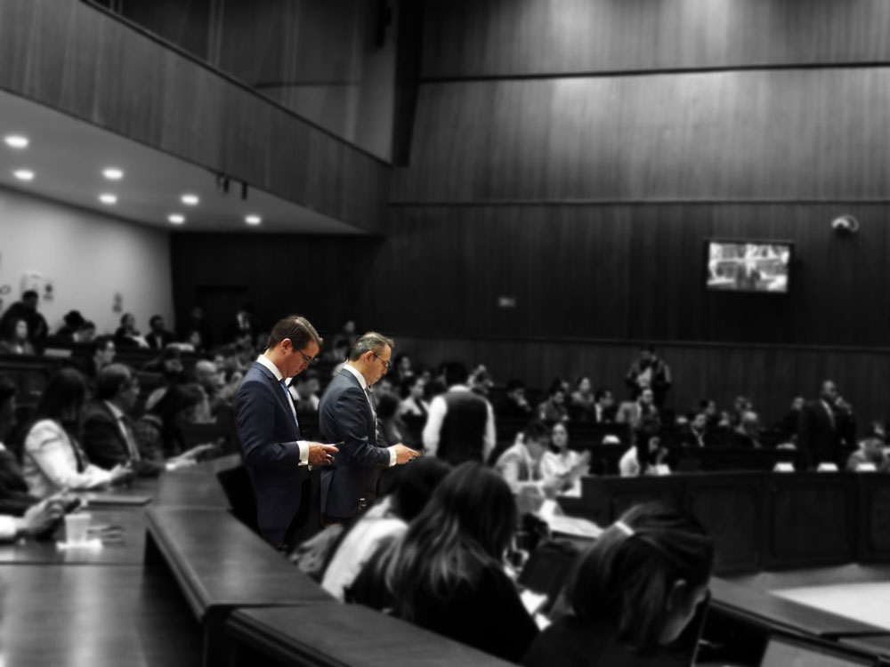
Los abogados del Presidente.
Los abogados del presidente ecuatoriano Guillermo Lasso parecen cortados por el mismo sastre. Un corte de cabello clásico con línea a derecha, lentes delgados, traje oscuro, camisa blanca con mancuernillas. El secretario jurídico de la Presidencia, Juan Pablo Ortiz y el abogado particular del Mandatario, Édgar Neira, parecen provenir de la misma familia. Ambos se reían abiertamente de la oposición, a la que tachaban de incapaz. También se levantaban al mismo tiempo de sus asientos, caminaban con la misma prosa, con las dos manos en los bolsillos y repetían los mismos gestos cuando miraban su teléfono celular.
Pero si hay algo en lo que se parecen más que nadie, es en su convicción de que Lasso es la opción de un mejor país. Lo creen desde hace más de una década, cuando empezaron a militar en la causa que verían perecer en sus manos: durante semanas, ambos intentaron boicotear el proceso de la acusación, esgrimiendo que se atropellaba la Ley y los procedimientos en la Asamblea Nacional.
La política, sin embargo, les devolvería las risas: la fuerza de los votos siempre puede más.
16El gran fracaso
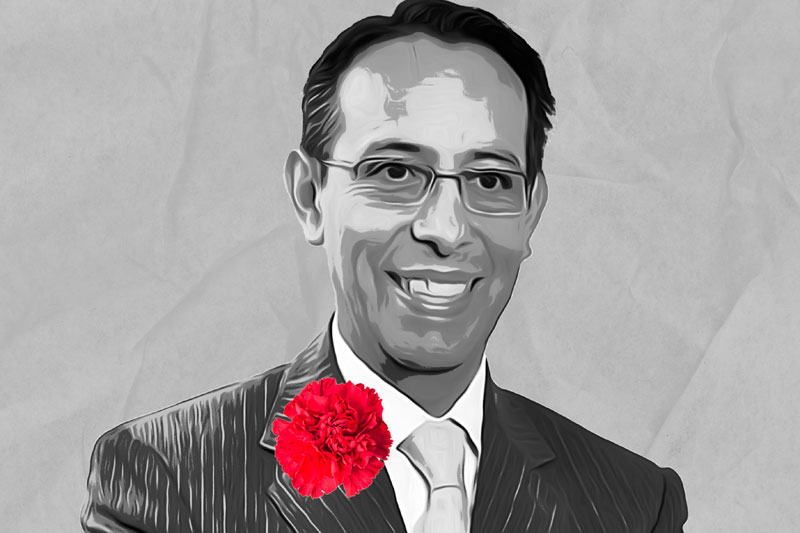
Édgar Neira, la apuesta que falló.
Hay planes que no pueden fallar. Pero fallan. El fichaje de Edgar Neira es uno de esos.
Constitucionalista de consulta, árbitro experto de la Cámara de Comercio de Quito, abogado privado, profesor de la Universidad Católica, y sobre todo, miembro clave de la elección de renovación de la Corte Constitucional, una muralla infranqueable para la política y el periodismo, en cuyas manos quedaba el nacimiento o la defunción del anunciado juicio político contra el presidente Guillermo Lasso.
Según la Constitución del Ecuador, un juicio político debe contar no solamente con estrictas causales, sino también con la venia de una mayoría calificada (dos terceras partes) de la menos politizada de las instituciones del país, la Corte Constitucional. Ese blindaje adicional, que busca evitar la ligereza en un país que, a inicios de siglo, llegó a tener siete presidentes en 10 años, era la última muralla de resistencia del Gobierno para soportar los efectos de la investigación.
Por eso, Neira era su apuesta.
Neira no es un abogado cualquiera. Hincha del presidente Lasso, fue notificado el 15 de agosto de 2021, con la decisión de que sería parte de la Comisión Calificadora para la renovación de la Corte Constitucional, que tiene lugar cada tres años para dar lugar al retiro de un tercio de los magistrados.
Durante el Gobierno de Guillermo Lasso obtuvieron su nombramiento Alejandra Cárdenas, Richard Ortiz y Jhoel Escudero. Así que la designación de Neira buscaba un acercamiento sutil a una base de tres jueces con los que tuvo relación antes de su nombramiento.
Nunca antes un plan dio tan pobres resultados.
Los tres jueces fueron parte de la mayoría, junto a Karla Andrade, Daniela Salazar, y el presidente y magistrado Alí Lozada, decidieron, el 29 de marzo de 2023, que la acusación contra el presidente de la República, basada en esta investigación, tenía el sustento constitucional suficiente. Y debía de seguir su trámite regular en el Parlamento, algo que no sucede en Ecuador desde 1931.
17Entonces, todo se vino abajo
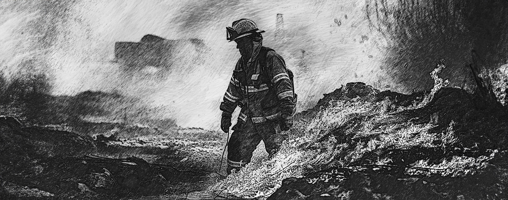
La madrugada del 17 de mayo de 2023: muerte cruzada.
Llovía sobre mojado. Todo lo que se pudo perder en la cancha de la política, se perdió. El Gobierno vio 104 votos pintados de verde para aprobar un criticado informe de fiscalización que recomendaba el juicio político. Contó 88 votos, 18 más de los necesarios, exigiendo que el juicio prosiguiera aunque el oficialismo había logrado impedir que se produjera legalmente un informe escrito para sustentar el impeachment. Recibió 96 votos (4 más de los que bastaban para la destitución presidencial) para ratificar en el cargo al opositor presidente de la Asamblea, quien lideraba la postura de la censura, Virgilio Saquicela.
Así que el presidente Guillermo Lasso asistió al histórico proceso con la convicción de que las matemáticas legislativas le jugaban en contra. Tal vez por eso utilizó menos de la tercera parte del tiempo que la Constitución le garantizaba para defenderse o decidió desacatar la norma que lo obligaba a asistir en persona a su interpelación.
Por esa misma noche, se acuarteló junto a su equipo más cercano en Carondelet. Esperaron a que la noche los cobijara, y en una decisión tan secreta que fue ajena incluso para el vicepresidente de la República, Alfredo Borrero, decidió disolver el Parlamento, días antes de su inminente desititución.
En la cadena nacional, grabada en el Salón Amarillo del Palacio de Gobierno a las 03:00, estuvieron junto al Presidente; el canciller, Gustavo Manrique; el ministro de Defensa, Luis Lara; el ministro de Gobierno, Henry Cucalón; el ministro del Interior, Juan Zapata y el secretario jurídico de la Presidencia, Juan Pablo Ortiz.
A las 06:00 del 17 de mayo del 2023, las copias de esa grabación se empezaron a repartir a los medios de comunicación nacionales con la consigna de mantenerlo una hora bajo reserva.
A las 07:00, el país conoció que el Parlamento había dejado de funcionar, que por primera vez bajo nuestra Constitución se anticiparían elecciones generales –en las que finalmente no participaría Guillermo Lasso– y que El Gran Padrino no sería ya preocupación de ningún juicio político, aunque aún queden por delante ocho juicios penales y el inevitable juicio de la historia.
Cronología
Treinta y cuatro días que sacudieron al poder
Del 9 de enero al 23 de febrero de 2023: cada entrega, cada reacción del Gobierno y el podcast diario que narró la investigación mientras ocurría.
9 ENEEntrega 01 · 2023
La primera revelación de esta investigación sobre la estructura de corrupción en las empresas públicas. Un audio de un hombre que forma parte de dicha estructura revela cómo opera todo.
10 ENEEntrega 02 · 2023
Un asambleísta de UNES, Ronny Aleaga, es mencionado por Leonardo Cortázar como parte de la estructura de corrupción. El padrino, Danilo Carrera, denuncia al medio por calumnia.
11 ENEEntrega 03 · 2023
Se detalla la estructura de corrupción en CNEL y Boscán lleva toda la información a la Asamblea. El Gobierno negó todas las denuncias de esta investigación.
12 ENEEntrega 04 · 2023
La oposición plantea la creación de una comisión en la Asamblea para investigar las denuncias de esta investigación sobre la corrupción en el Gobierno de Lasso.
14 ENEEntrega 05 · 2023
El Presidente Guillermo Lasso dice que colaborará con las investigaciones sobre la corrupción en su Gobierno.
16 ENEEntrega 06 · 2023
Se revelan los audios de Hernán Luque con Rubén Cherres donde hablan de cómo ejecutar actos de corrupción en el sector eléctrico y petrolero. El ministro del Interior dice que capturará a Cherres.
17 ENEEntrega 07 · 2023
El equipo de investigación revela cómo un convenio entre Flopec y una empresa privada genera un millonario perjuicio al Estado y las autoridades no hacen nada. Danilo Carrera pide medio millón como indemnización.
18 ENEEntrega 08 · 2023
La comisión para investigar el caso de El Gran Padrino fue conformada en la Asamblea por el correísmo, socialcristianos y aliados.
19 ENEEntrega 09 · 2023
Lasso pretende que la Secretaría Anticorrupción fiscalice a las empresas públicas.
20 ENEEntrega 10 · 2023
La Fiscalía ejecuta allanamientos para investigar a los involucrados en el caso y en el mundo judicial se lo denomina Caso Encuentro.
22 ENEEntrega 11 · 2023
El Presidente Lasso niega una estructura de corrupción, pero condenó los actos de corrupción cometidos por Hernán Luque. Nuevamente, defendió a su cuñado, Danilo Carrera en una cadena nacional.
23 ENEEntrega 12 · 2023
Esta investigación reveló otro audio de una conversación entre Rubén Cherres y Danilo Carrera sobre su intención de colocar a un ministro en el Gobierno de Lasso. El Secretario Anticorrupción entregó su informe sobre las denuncias en las empresas públicas.
26 ENEEntrega 13 · 2023
Representantes de los partidos políticos de UNES y Pachakutik, presiden la comisión ocasional que investigará el caso de el Gran Padrino en la Asamblea.
27 ENEEntrega 14 · 2023
El canciller de la República se defiende ante Fiscalía.
28 ENEEntrega 15 · 2023
Sacan al gerente de CNEL por las denuncias de corrupción.
1 FEBEntrega 16 · 2023
Lasso afirma que su Gobierno está bajo un ataque "grosero y mentiroso"
2 FEBEntrega 17 · 2023
Los gerentes y autoridades de las empresas públicas reaccionan ante las denuncias.
3 FEBEntrega 18 · 2023
Oswaldo Rosero, gerente de FLOPEC, empresa pública encargada del transporte de crudo al mercado internacional, abandonó su cargo.
4 FEBEntrega 19 · 2023
Petroecuador trata de blindarse para que la corrupción continúe.
8 FEBEntrega 20 · 2023
Se revelan dos audios donde Mauricio Guim, hombre de confianza de Lasso, habla de negocios en las empresas públicas. También, la investigación saca a la luz varias irregularidades en Petroecuador.
9 FEBEntrega 21 · 2023
El gabinete del Presidente cambia tras las denuncias y las autoridades retienen a Mauricio Guim.
10 FEBEntrega 22 · 2023
Más allanamientos alrededor de la investigación de El Gran Padrino. El gerente de Petroecuador se va de su puesto.
11 FEBEntrega 23 · 2023
Asambleístas piden a la Fiscalía que evite la salida del país de ocho exfuncionarios del Gobierno que estarían involucrados en casos de corrupción.
13 FEBEntrega 24 · 2023
Esta investigación revela un informe de la Policía que deja ver supuestos nexos del Gobierno con la mafia albanesa. Se presentan las escuchas telefónicas alrededor de la investigación y Andersson Boscán lleva toda la información a la Asamblea.
14 FEBEntrega 25 · 2023
Un General de la Policía está envuelto en el Gran Informe por reuniones y comunicaciones con los involucrados. El Presidente ataca a la prensa por las denuncias realizadas.
15 FEBEntrega 26 · 2023
La exministra de agricultura también es mencionada en el informe sobre narcotráfico y sus nexos con el Gobierno.
16 FEBEntrega 27 · 2023
Los detalles de cómo funciona la mafia albanesa en Ecuador y Cherres fue parte de la campaña presidencial de Lasso.
17 FEBEntrega 28 · 2023
Rubén Cherres financió la campaña presidencial de Guillermo Lasso.
18 FEBEntrega 29 · 2023
El Coronel a cargo de la investigación sobre la mafia albanesa en Ecuador es amenazado de muerte.
19 FEBEntrega 30 · 2023
Los policías que trabajaron en el caso León de Troya fueron amenazados de muerte.
20 FEBEntrega 31 · 2023
La presidenta de la comisión que investiga el caso fue amenazada de muerte.
21 FEBEntrega 32 · 2023
La Asamblea se prepara para entregar su informe de la investigación de El Gran Padrino.
23 FEBEntrega 33 · 2023
El Presidente Lasso conocía del informe de narcotráfico que involucra a su Gobierno y no hizo nada.
La red
Quién es quién y quién llama a quién
Mapa de relaciones documentadas en la investigación: audios, llamadas interceptadas, decretos y nombramientos. Pasa el cursor o toca un nombre para ver sus vínculos.
Cada línea corresponde a un hecho documentado en el artículo. Las fotografías son las publicadas originalmente en 2023.
Perfiles
Los involucrados
Veintiún nombres. Su cargo, su vínculo con la trama y qué pasó con ellos. Estado actualizado a la última entrega de 2023.
Impacto
Un terremoto político
La revelación de El Gran Padrino generó un impacto digital con miles de reacciones, interacciones y visualizaciones, y una reacción institucional sin precedentes.
Una de las investigaciones que me impresionaron fue la del caso Gran Padrino ya que yo dí mi voto por Guillermo Lasso, pensaba que era una persona correcta, hasta cuando vi La Posta y mostraron como su cuñado y otros estaban robando. Luego de ello, vinculado con la mafia albanesa, cambió mi percepción del Gobierno, y ya no cuenta con mi aprobación, y no nunca más por nadie que tenga que ver con Guillermo Lasso.
La investigación da un equilibrio a la justicia, que no sólo los medios tradicionales tienen la apertura de poder llegar a la información que necesitamos los ciudadanos. En la actualidad los medios pequeños y digitales marcan agenda, porque son los que descubren actos de corrupción. Eso marca la diferencia entre el periodismo tradicional con el digital.
De alguna manera siento alivio, es increíble la información que ustedes han podido recopilar, es escandalosa la información que ustedes han podido recopilar y lógicamente que para mi la conclusión es de admiración.
Me ha sorprendido la desfachatez con la que hablaba Luque y el escándalo de la impunidad con la que se creía, hablaba y actuaba este señor. Claro, los que no estamos en estos tejemanejes nos suele sorprender cómo ocurren estas cosas, creíamos que ocurren con mucha más discreción y verlo y escucharlo ha sido bastante impactante.
Como ciudadano agradezco e impulso a que medios de comunicación tengan un área destinada para el periodismo de investigación ya que solo así solo aquellos mal llamados "ciudadanos de pie" podemos conocer el tras bambalinas de la política nacional y del manejo y gestión del sector público.
Lo que me alegra un poco es que ahora hay una nueva generación que me parece quiere cambiar la historia. Entre estos una nueva forma de hacer periodismo como La Posta que los investiga y los desenmascara a estos delincuentes, eso puede contribuir a que algún día el sistema de Gobierno, de justicia en Ecuador sea como acá en Italia que no es perfecto pero funciona mejor que en Latinoamérica.
La voz del poder
Bernardo ManzanoExministro de Agricultura
Reconoce que sí conoció y conversó con Rubén Cherres. "Lo conocí en una reunión social, luego me llamó para pedirme mi currículum". Dice que no influyó en su designación.
Esteban TorresJefe de bancada del Partido Social Cristiano
Asegura que la información presentada por esta investigación con el tiempo se comprobó que es verdad. El legislador socialcristiano impulsó el juicio al presidente Lasso.
Henry CucalónMinistro de Gobierno
El Ministro sostiene que el Gobierno no tiene nada que esconder. "Ojalá le metan preso al sátrapa de (Hernán) Luque, ojalá le metan preso al sátrapa de (Rubén) Cherres".
Ismael QuintanaConstitucionalista
Analiza a la Fiscalía: "A veces nos sorprende por su celeridad y en otros casos, como éste, parece que la cosa camina más lento, da la sensación de que hay cierta selectividad".
Mae MontañoExministra de Inclusión Económica y Social
La exfuncionaria cuestiona duramente al Presidente, sobre todo por los ataques a los periodistas. "¿Cuál es el límite de la libertad de expresión que usted está determinando?"
Pedro DonosoAnalista político
"Es supremamente importante entender el impacto de esta revelación periodística (…) Lo que hizo el Gran Padrino es develar la debilidad e inmadurez que tiene el Ecuador".
Rafael LuceroAsambleísta de Pachakutik
El legislador asegura que la "prensa libre hace un ciudadano libre (…) Esta investigación hacía falta para que genere una reacción política".
Prensa nacional e internacional
Reporteros Sin Fronteras · RFI23 de febrero de 2023
Ecuador: RSF denuncia los intentos del gobierno de silenciar el periodismo de investigación.
El Tiempo28 de febrero de 2023
¿Por qué la presidencia de Guillermo Lasso está en la cuerda floja en Ecuador?
NTN2418 de enero de 2023
Denuncia sobre el caso de corrupción "El Gran Padrino" salpica a la familia del presidente Guillermo Lasso.
CNN15 de febrero de 2023
El presidente Lasso advierte que instituciones del Estado quieren "tumbar" a su Gobierno y generar caos en Ecuador.
El Universo15 de febrero de 2023
El medio responsabiliza al Gobierno por su seguridad y gremios condenan amenazas entre pedidos de no incurrir en un 'periodismo populista'.
Actualización · septiembre de 2026
Lo que pasó después
La investigación se publicó entre enero y febrero de 2023. Tres años y medio después, el caso Encuentro tiene un condenado bajo arresto domiciliario, un extraditado en la Cárcel del Encuentro, un prófugo preso en Buenos Aires y un presidente que nunca fue procesado. Esto es lo que consta, con fecha y fuente, al 5 de septiembre de 2026.
Condenado a 10 años
Danilo Carrera
El Gran Padrino
Formulación de cargos el 24 de noviembre de 2023 por delincuencia organizada; arresto domiciliario por edad. El 20 de noviembre de 2024 el Tribunal Anticorrupción lo sentenció como líder de la organización. Apeló; la audiencia concluyó el 16 de julio de 2026 y el tribunal deliberaba al cierre de esta actualización.
Preso en la Cárcel del Encuentro
Leonardo Cortázar
El operador de CNEL
Salió del país el 20 de diciembre de 2022. Capturado en Panamá el 20 de marzo de 2025 y extraditado el 10 de febrero de 2026. Su juicio, junto con Karen Cornejo, está fijado del 14 al 18 de septiembre de 2026.
Preso en Buenos Aires
Hernán Luque
Expresidente de EMCO
Detenido por Interpol el 8 de febrero de 2024. La Corte Suprema argentina confirmó su extradición el 30 de abril de 2026; la entrega seguía pendiente del Ejecutivo argentino en septiembre de 2026.
Condenado a 9 años y 4 meses
Antonio Icaza
Exgerente de CNEL
Sentenciado como colaborador el 20 de noviembre de 2024. Su apelación se resolvía junto con la de Carrera.
Asesinado
Rubén Cherres
El socio de la mafia albanesa
Su cuerpo y el de tres personas más aparecieron el 31 de marzo de 2023 en Punta Blanca, Santa Elena. Dos acusados fueron llamados a juicio en febrero de 2024; no consta sentencia ni autores intelectuales.
Detenido en Abu Dabi
Dritan Gjika
Jefe de la mafia albanesa
Capturado el 26 de mayo de 2025 con difusiones rojas de Ecuador y España. Emiratos Árabes no había decidido a quién entregarlo al cierre de esta actualización.
Fuera de la investigación penal
Guillermo Lasso
Expresidente
La Fiscalía nunca le formuló cargos. La vía fue política: la comisión de la Asamblea recomendó el juicio por peculado y el 17 de mayo de 2023, un día después de comparecer, decretó la muerte cruzada. La denuncia por Flopec fue archivada por la Corte Nacional el 17 de mayo de 2025. Dejó el poder el 23 de noviembre de 2023.
Refugiado en Colombia
Naín Massuh
Alias El Turco
Detenido en Bogotá en enero de 2025; Colombia le concedió refugio en octubre y la Corte Nacional archivó la extradición el 13 de abril de 2026.
Embajadora en Argentina
Diana Salazar
Exfiscal general
Dejó la Fiscalía el 21 de mayo de 2025 y fue nombrada embajadora en Buenos Aires, donde gestiona el nuevo tratado de extradición que decidirá la entrega de Luque.
Los hitos
9 ene 2023Primera entrega de El Gran Padrino; la Fiscalía abre la investigación previa.
20 ene 2023Nueve allanamientos en Quito y Guayaquil.
31 mar 2023Aparece asesinado Rubén Cherres.
17 may 2023Lasso decreta la muerte cruzada un día después de comparecer al juicio político.
24 nov 2023Formulación de cargos: Carrera, Luque, Cortázar, Icaza y otros.
8 feb 2024Luque es detenido en Buenos Aires.
20 nov 2024Carrera, condenado a 10 años; Icaza, a 9 años y 4 meses.
20 mar 2025Cortázar cae en Panamá.
26 may 2025Gjika, detenido en Abu Dabi.
10 feb 2026Cortázar llega a la Cárcel del Encuentro.
30 abr 2026Argentina confirma la extradición de Luque.
16 jul 2026Concluye la apelación de Carrera e Icaza; en deliberación.
14-18 sep 2026Juicio a Cortázar y Karen Cornejo.
Detrás de cámaras · 27 de enero de 2023
El Gran Padrino detrás cámaras
Siete periodistas durante seis meses: Danilo Castro, Estefanía Vaca, Juan José Albán, Doménica Vivanco, Mónica Velásquez y Andersson Boscán, con Jeff Sanguña, Christian Torres y Javier Montenegro en el equipo que reconoció el Premio Gabo. Mil quinientos contratos revisados, veinticinco informes financieros, dos informes tributarios, treinta y cinco entrevistas, doscientas páginas de inteligencia y una hemeroteca de audios. Andersson lo contó a cámara cuando empezaron a decir que la investigación eran solo unos audios.
Los documentos
El expediente original enlazaba 48 documentos alojados en un Google Drive que dejó de existir entre agosto de 2023 y marzo de 2024. El archivo de Internet conserva los nombres de parte de ellos y el listado de las carpetas, no su contenido. Los 35 audios de la investigación (33 podcasts diarios, el negociado en las eléctricas y la entrevista al presidente) están completos en este sitio. Buena parte de los documentos vive hoy en el expediente judicial del caso Encuentro (200 elementos de convicción del dictamen del 22 de julio de 2024) y en el informe de la comisión de la Asamblea.
Nombres recuperados del archivo de Internet
El Gran Informe policial (visor archivado, agosto de 2023)
Informe parlamentario de 221 páginas
Cortázar financió al hermano de Moreno (video)
Quipux a la Presidencia con la denuncia
Senescyt: Luque sin título registrado
Carpeta 16 de enero: audios Luque y Cherres
Pedido de captura de Luque y Cherres a la Fiscalía
Gunvor: las conexiones societarias del pool Amazonas Tanker
Impactos de los buques tomados en Time Charter (Flopec, 2020)
Carpeta Notaría Tercera de Daule: las ocho empresas de Cherres y Gjika
Carpeta Audios generales: el mando policial cierra la investigación narcopolítica
Decreto Ejecutivo 261 y Decreto 4
Registros de la Superintendencia de Bancos y del IESS
Una investigación dirigida por Andersson Boscán con un equipo de nueve periodistas. Hoy, Boscán y Mónica Velásquez continúan el trabajo desde el exilio en Toronto.
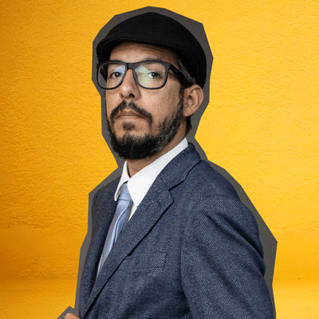
Firma
Andersson Boscán
Dirección de la investigación · Edición
Venezolano-ecuatoriano. Dos décadas de reportería política e investigación en Ecuador. Ha dirigido series que abrieron procesos judiciales y parlamentarios: El Gran Padrino (Caso Encuentro), finalista del Premio Gabo 2023; Ministerio de la Muerte; el seguimiento local de Odebrecht; el crimen organizado operando desde cárceles y el reclutamiento infantil por bandas. Tras recibir amenazas de muerte salió forzadamente del país en 2023 y obtuvo asilo político en Canadá. Continúa editando y reporteando desde Toronto.
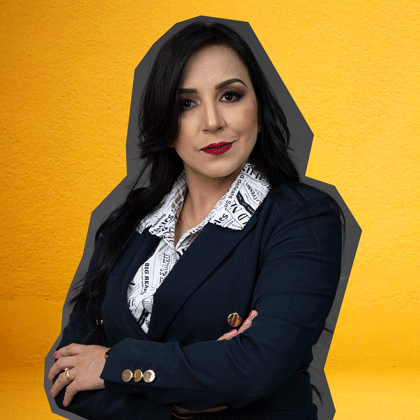
Firma
Mónica Velásquez
Investigación · Reportería de terreno
Guayaquil, 1986. Periodista en terreno. Galardonada en 2024 con el Courage in Journalism Award de la IWMF por su trabajo en zonas donde el periodismo se paga con la vida. Su firma suma un Eppy Award, una mención honorífica de la SIP y una mención del Premio Rey de España; fue finalista del Premio Gabo. Para El Gran Padrino asistió a decenas de reuniones con fuentes, poniendo en juego su integridad física para recabar la información del caso.
Equipo original de la investigación · 2023
Jeff Sanguña
(Ecuador, 1995) Pieza clave para asuntos de investigación. Su trabajo fue fundamental para destapar el caso gracias a la reportería y el procesamiento de la información. Ha participado en investigaciones como el caso de las vacunas VIP y la venta del viceministerio de Agricultura.
Doménica Vivanco
(Ecuador, 1996) Periodista, la astucia personificada. Investigación enfocada en contratación pública y corrupción. Fue parte del equipo que hiló el Caso Baby Yunda y reveló el tráfico de influencias del exministro Andrés Michelena. Locución e investigación del podcast.
Christian Torres
(Ecuador, 1976) El sigilo del grupo. Especialista en contratación pública, con 22 años de experiencia. Parte del equipo ganador del premio IPYS a la mejor investigación de corrupción (2004) y del premio CUPRE (2014). Edición periodística de esta serie.
Juanjo Albán
(Ecuador, 1999) El periodista más joven del equipo. Recabó contratos y estructuras delictivas en centrales hidroeléctricas y eléctricas. Estudió en Leiria, Portugal, y colaboró con la agencia EFE en Madrid.
Danilo Castro
(Ecuador, 1997) La suspicacia dentro del grupo. Reveló la vinculación de empresas privadas con personas con nexos con la mafia albanesa. Ganador en 2019 de un premio académico de la UDLA al mejor reportaje de TV.
Estefanía Vaca
(Ecuador, 1998) Más de cinco años de experiencia en investigaciones sociales y políticas. Tras investigar casos de violencia sexual dentro del MIES, se creó un protocolo de prevención en todas las entidades públicas del país.
Vendido
Javier Montenegro
Créditos completos
Dirección
Andersson Boscán
Investigación periodística
Andersson Boscán · Christian Torres · Mónica Velásquez · Danilo Castro · Doménica Vivanco · Estefanía Vaca · Javier Montenegro · Jefferson Sanguña · Juan José Albán
Coordinación general
Jenny Navarro · Daniela Chiriboga · Saray Chaparro
Coordinación editorial
Javier Montenegro
Edición periodística
Christian Torres
Estrategia digital
Luis Miguel Chávez
Producción audiovisual
Josemaría Gil · Renato Tapia · Daniel Sono · Javier Masache
Guiones
Luis Eduardo Vivanco · Doménica Vivanco · Jefferson Sanguña · Javier Montenegro
Locución
Luis Eduardo Vivanco · Doménica Vivanco
Podcast
Investigación y guion: Doménica Vivanco · Christian Torres · Andersson Boscán · Edición de audio: Javier Masache
Diseño e ilustraciones (2023)
Rodney Garzón · Viviana Guzmán
Desarrollo web original (2023)
Gabriel Maldonado
Difusión internacional
Silrat Traslaviña
Edición web 2026
Boscán & La Moni · Eureka Media EC
Nota editorial. Esta investigación fue publicada originalmente entre enero y junio de 2023 por el equipo dirigido por Andersson Boscán. Esta edición conserva íntegros los textos, documentos y audios de la serie; las citas textuales de terceros se reproducen tal como fueron dichas. Edición web 2026 de Boscán & La Moni · Eureka Media EC.